Chapter 10: Fixed-Axis Rotation¶
Introduction¶
In previous chapters, we described motion (kinematics) and how to change motion (dynamics), and we defined important concepts such as energy for objects that can be considered as point masses. Point masses, by definition, have no shape and so can only undergo translational motion. However, we know from everyday life that rotational motion is also very important and that many objects that move have both translation and rotation. The wind turbines in our chapter opening image are a prime example of how rotational motion impacts our daily lives, as the market for clean energy sources continues to grow.
We begin to address rotational motion in this chapter, starting with fixed-axis rotation. Fixed-axis rotation describes the rotation around a fixed axis of a rigid body; that is, an object that does not deform as it moves. We will show how to apply all the ideas we’ve developed up to this point about translational motion to an object rotating around a fixed axis. In the next chapter, we extend these ideas to more complex rotational motion, including objects that both rotate and translate, and objects that do not have a fixed rotational axis.
10.1 Rotational Variables¶
Learning Objectives
By the end of this section, you will be able to:
- Describe the physical meaning of rotational variables as applied to fixed-axis rotation
- Explain how angular velocity is related to tangential speed
- Calculate the instantaneous angular velocity given the angular position function
- Find the angular velocity and angular acceleration in a rotating system
- Calculate the average angular acceleration when the angular velocity is changing
- Calculate the instantaneous angular acceleration given the angular velocity function
So far in this text, we have mainly studied translational motion, including the variables that describe it: displacement, velocity, and acceleration. Now we expand our description of motion to rotation—specifically, rotational motion about a fixed axis. We will find that rotational motion is described by a set of related variables similar to those we used in translational motion.
Angular Velocity¶
Uniform circular motion (discussed previously in Motion in Two and Three Dimensions) is motion in a circle at constant speed. Although this is the simplest case of rotational motion, it is very useful for many situations, and we use it here to introduce rotational variables.
In Figure 10.2, we show a particle moving in a circle. The coordinate system is fixed and serves as a frame of reference to define the particle’s position. Its position vector from the origin of the circle to the particle sweeps out the angle \(\theta\), which increases in the counterclockwise direction as the particle moves along its circular path. The angle \(\theta\) is called the angular position of the particle. As the particle moves in its circular path, it also traces an arc length s. The particle may complete more than one revolution around the circle, and so the angle \(\theta\) may be greater than \(2\pi\), and the arc length s may be greater than the circumference, \(2\pi r\).
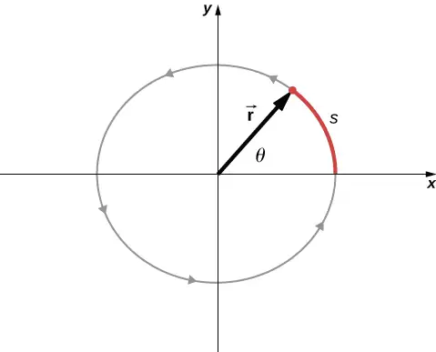
The angle is related to the radius of the circle and the arc length by
equation callout
The angle \(\theta\), the angular position of the particle along its path, has units of radians (rad). There are \(2\pi\) radians in \(360{}^{\circ}.\) Note that the radian measure is a ratio of length measurements, and therefore is a dimensionless quantity. As the particle moves along its circular path, its angular position changes and it undergoes angular displacements \(\Delta\theta.\)
We can assign vectors to the quantities in Equation 10.1. The angle \(\mathbf{\vec{\theta}}\) is a vector out of the page in Figure 10.2. The angular position vector \(\mathbf{\vec{r}}\) and the arc length \(\mathbf{\vec{s}}\) both lie in the plane of the page. These three vectors are related to each other by
That is, the arc length is the cross product of the angle vector and the position vector, as shown in Figure 10.3.
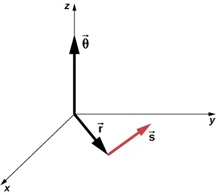
The magnitude of the angular velocity, denoted by \(\omega\), is the time rate of change of the angle \(\theta\) as the particle moves in its circular path. The instantaneous angular velocity is defined as the limit in which \(\Delta t\rightarrow 0\) in the average angular velocity \(\bar{\omega}=\frac{\Delta\theta}{\Delta t}\):
equation callout
where \(\theta\) is the angle of rotation (Figure 10.2). The units of angular velocity are radians per second (rad/s). Angular velocity can also be referred to as the rotation rate in radians per second. In many situations, we are given the rotation rate in revolutions/s or cycles/s. To find the angular velocity, we must multiply revolutions/s by \(2\pi\), since there are \(2\pi\) radians in one complete revolution. Since the direction of a positive angle in a circle is counterclockwise, we take counterclockwise rotations as being positive and clockwise rotations as negative.
We can see how angular velocity is related to the tangential speed of the particle by differentiating Equation 10.1 with respect to time. We rewrite Equation 10.1 as
Taking the derivative with respect to time and noting that the radius r is a constant, we have
where \(\theta\frac{dr}{dt}=0\). Here \(\frac{ds}{dt}\) is just the tangential speed \(v_{\text{t}}\) of the particle in Figure 10.2. Thus, by using Equation 10.3, we arrive at
equation callout
That is, the tangential speed of the particle is its angular velocity times the radius of the circle. From Equation 10.4, we see that the tangential speed of the particle increases with its distance from the axis of rotation for a constant angular velocity. This effect is shown in Figure 10.4. Two particles are placed at different radii on a rotating disk with a constant angular velocity. As the disk rotates, the tangential speed increases linearly with the radius from the axis of rotation. In Figure 10.4, we see that \(v_{1}=r_{1}\omega_{1}\) and \(v_{2}=r_{2}\omega_{2}\). But the disk has a constant angular velocity, so \(\omega_{1}=\omega_{2}\). This means \(\frac{v_{1}}{r_{1}}=\frac{v_{2}}{r_{2}}\) or \(v_{2}=\left( \frac{r_{2}}{r_{1}} \right)v_{1}\). Thus, since \(r_{2} \gt r_{1}\), \(v_{2} \gt v_{1}\).
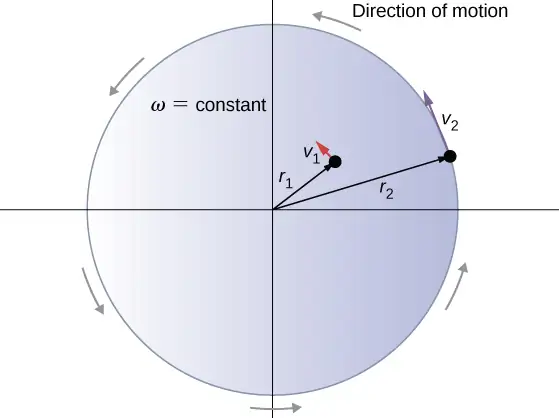
Up until now, we have discussed the magnitude of the angular velocity \(\omega=d\theta\text{/}dt,\) which is a scalar quantity—the change in angular position with respect to time. The vector \(\mathbf{\vec{\omega}}\) is the vector associated with the angular velocity and points along the axis of rotation. This is useful because when a rigid body is rotating, we want to know both the axis of rotation and the direction that the body is rotating about the axis, clockwise or counterclockwise. The angular velocity \(\mathbf{\vec{\omega}}\) gives us this information. The angular velocity \(\mathbf{\vec{\omega}}\) has a direction determined by what is called the right-hand rule. The right-hand rule is such that if the fingers of your right hand wrap counterclockwise from the x-axis (the direction in which \(\theta\) increases) toward the y-axis, your thumb points in the direction of the positive z-axis (Figure 10.5). An angular velocity \(\mathbf{\vec{\omega}}\) that points along the positive z-axis therefore corresponds to a counterclockwise rotation, whereas an angular velocity \(\mathbf{\vec{\omega}}\) that points along the negative z-axis corresponds to a clockwise rotation.
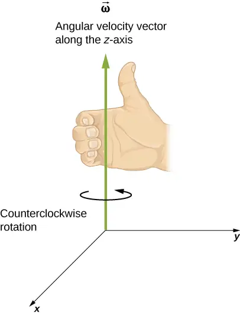
Similar to Equation 10.2, one can state a cross product relation to the vector of the tangential velocity as stated in Equation 10.4. Therefore, we have
That is, the tangential velocity is the cross product of the angular velocity and the position vector, as shown in Figure 10.6. From part (a) of this figure, we see that with the angular velocity in the positive z-direction, the rotation in the xy-plane is counterclockwise. In part (b), the angular velocity is in the negative z-direction, giving a clockwise rotation in the xy-plane.
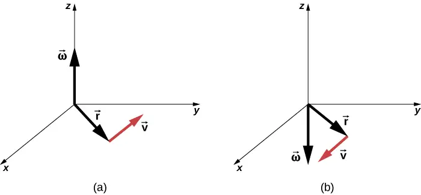
Example 10.1 Rotation of a Flywheel
A flywheel rotates such that it sweeps out an angle at the rate of \(\theta=\omega t=(45.0\:\text{rad}\text{/}\text{s)}t\) radians. The wheel rotates counterclockwise when viewed in the plane of the page. (a) What is the angular velocity of the flywheel? (b) What direction is the angular velocity? (c) How many radians does the flywheel rotate through in 30 s? (d) What is the tangential speed of a point on the flywheel 10 cm from the axis of rotation?
Strategy
The functional form of the angular position of the flywheel is given in the problem as \(\theta(t)=\omega t\), so by taking the derivative with respect to time, we can find the angular velocity. We use the right-hand rule to find the angular velocity. To find the angular displacement of the flywheel during 30 s, we seek the angular displacement \(\Delta\theta\), where the change in angular position is between 0 and 30 s. To find the tangential speed of a point at a distance from the axis of rotation, we multiply its distance times the angular velocity of the flywheel.
Solution
- \(\omega=\frac{d\theta}{dt}=45\:\text{rad}\text{/}\text{s}\). We see that the angular velocity is a constant.
- By the right-hand rule, we curl the fingers in the direction of rotation, which is counterclockwise in the plane of the page, and the thumb points in the direction of the angular velocity, which is out of the page.
- \(\Delta\theta=\theta(30\:\text{s})-\theta(0\:\text{s})=45.0(30.0\:\text{s})-45.0(0\:\text{s})=1350.0\:\text{rad}\).
- \(v_{\text{t}}=r\omega=(0.1\:\text{m})(45.0\:\text{rad}\text{/}\text{s})=4.5\:\text{m/s}\).
Significance
In 30 s, the flywheel has rotated through quite a number of revolutions, about 215 if we divide the angular displacement by \(2\pi\). A massive flywheel can be used to store energy in this way, if the losses due to friction are minimal. Recent research has considered superconducting bearings on which the flywheel rests, with zero energy loss due to friction.
Angular Acceleration¶
We have just discussed angular velocity for uniform circular motion, but not all motion is uniform. Envision an ice skater spinning with his arms outstretched—when he pulls his arms inward, his angular velocity increases. Or think about a computer’s hard disk slowing to a halt as the angular velocity decreases. We will explore these situations later, but we can already see a need to define an angular acceleration for describing situations where \(\omega\) changes. The faster the change in \(\omega\), the greater the angular acceleration. We define the instantaneous angular acceleration \(\alpha\) as the derivative of angular velocity with respect to time:
equation callout
where we have taken the limit of the average angular acceleration, \(\bar{\alpha}=\frac{\Delta\omega}{\Delta t}\) as \(\Delta t\rightarrow 0\).
The units of angular acceleration are (rad/s)/s, or \(\text{rad/s}^{2}\).
In the same way as we defined the vector associated with angular velocity \(\mathbf{\vec{\omega}}\), we can define \(\mathbf{\vec{\alpha}}\), the vector associated with angular acceleration (Figure 10.7). If the angular velocity is along the positive z-axis, as in Figure 10.5, and \(\frac{d\omega}{dt}\) is positive, then the angular acceleration \(\mathbf{\vec{\alpha}}\) is positive and points along the \(+z\text{-}\) axis. Similarly, if the angular velocity \(\mathbf{\vec{\omega}}\) is along the positive z-axis and \(\frac{d\omega}{dt}\) is negative, then the angular acceleration is negative and points along the \(-z-\) axis.
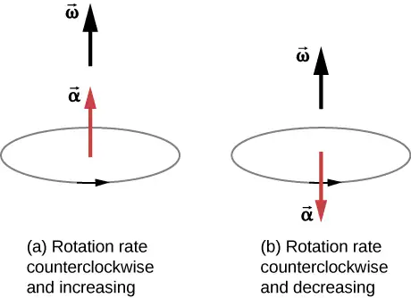
We can express the tangential acceleration vector as a cross product of the angular acceleration and the position vector. This expression can be found by taking the time derivative of \(\mathbf{\vec{v}}=\mathbf{\vec{\omega}}\:\times\:\mathbf{\vec{r}}\) and is left as an exercise:
The vector relationships for the angular acceleration and tangential acceleration are shown in Figure 10.8.
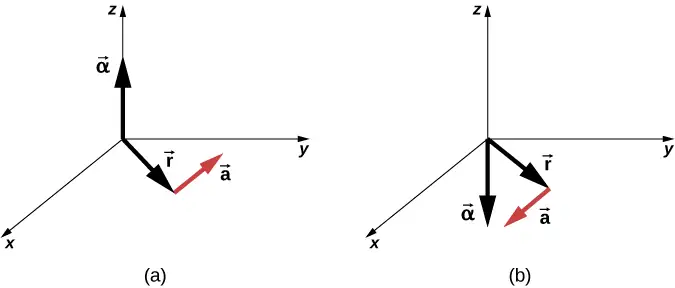
We can relate the tangential acceleration of a point on a rotating body at a distance from the axis of rotation in the same way that we related the tangential speed to the angular velocity. If we differentiate Equation 10.4 with respect to time, noting that the radius r is constant, we obtain
equation callout
Thus, the tangential acceleration \(a_{t}\) is the radius times the angular acceleration. Equation 10.4 and Equation 10.8 are important for the discussion of rolling motion (see Angular Momentum).
Let’s apply these ideas to the analysis of a few simple fixed-axis rotation scenarios. Before doing so, we present a problem-solving strategy that can be applied to rotational kinematics: the description of rotational motion.
Problem-Solving Strategy: Rotational Kinematics
- Examine the situation to determine that rotational kinematics (rotational motion) is involved.
- Identify exactly what needs to be determined in the problem (identify the unknowns). A sketch of the situation is useful.
- Make a complete list of what is given or can be inferred from the problem as stated (identify the knowns).
- Solve the appropriate equation or equations for the quantity to be determined (the unknown). It can be useful to think in terms of a translational analog, because by now you are familiar with the equations of translational motion.
- Substitute the known values along with their units into the appropriate equation and obtain numerical solutions complete with units. Be sure to use units of radians for angles.
- Check your answer to see if it is reasonable: Does your answer make sense?
Now let’s apply this problem-solving strategy to a few specific examples.
Example 10.2 A Spinning Bicycle Wheel
A bicycle mechanic mounts a bicycle on the repair stand and starts the rear wheel spinning from rest to a final angular velocity of 250 rpm in 5.00 s. (a) Calculate the average angular acceleration in \(\text{rad/s}^{2}\). (b) If she now hits the brakes, causing an angular acceleration of −87.3 \(\text{rad/s}^{2}\), how long does it take the wheel to stop?
Strategy
The average angular acceleration can be found directly from its definition \(\bar{\alpha}=\frac{\Delta\omega}{\Delta t}\) because the final angular velocity and time are given. We see that \(\Delta\omega=\omega_{\text{final}}-\omega_{\text{initial}}=250\:\text{rev/min}\) and \(\Delta t\) is 5.00 s. For part (b), we know the angular acceleration and the initial angular velocity. We can find the stopping time by using the definition of average angular acceleration and solving for \(\Delta t\), yielding
Solution
a. Entering known information into the definition of angular acceleration, we get
Because \(\Delta\omega\) is in revolutions per minute (rpm) and we want the standard units of \(\text{rad/s}^{2}\) for angular acceleration, we need to convert from rpm to rad/s:
Entering this quantity into the expression for \(\alpha\), we get
b. Here the angular velocity decreases from 26.2 rad/s (250 rpm) to zero, so that \(\Delta\omega\) is −26.2 rad/s, and \(\alpha\) is given to be –87.3 \(\text{rad/s}^{2}\). Thus,
Significance
Note that the angular acceleration as the mechanic spins the wheel is small and positive; it takes 5 s to produce an appreciable angular velocity. When she hits the brake, the angular acceleration is large and negative. The angular velocity quickly goes to zero.
Check Your Understanding
The fan blades on a turbofan jet engine (shown below) accelerate from rest up to a rotation rate of 40.0 rev/s in 20 s. The increase in angular velocity of the fan is constant in time. (The GE90-110B1 turbofan engine mounted on a Boeing 777, as shown, is currently the largest turbofan engine in the world, capable of thrusts of 330–510 kN.)
(a) What is the average angular acceleration?
(b) What is the instantaneous angular acceleration at any time during the first 20 s?
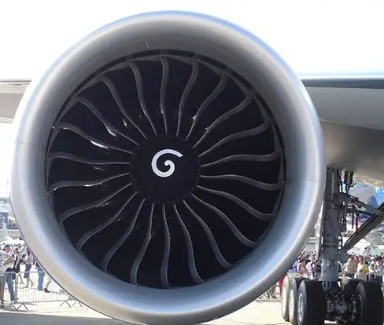
Answer
a. \(40.0\:\text{rev}\text{/}\text{s}=2\pi(40.0)\:\text{rad}\text{/}\text{s}\), \(\bar{\alpha}=\frac{\Delta\omega}{\Delta t}=\frac{2\pi(40.0)-0\:\text{rad/s}}{20.0\:\text{s}}=2\pi(2.0)=4.0\pi\:\text{rad/}\text{s}^{2}\); b. Since the angular velocity increases linearly, there has to be a constant acceleration throughout the indicated time. Therefore, the instantaneous angular acceleration at any time is the solution to \(4.0\pi\:\text{rad/}\text{s}^{2}\).
Example 10.3 Wind Turbine
A wind turbine (Figure 10.10) in a wind farm is being shut down for maintenance. It takes 30 s for the turbine to go from its operating angular velocity to a complete stop in which the angular velocity function is \(\omega(t)=[{(t\text{s}^{-1}-30.0)}^{2}\text{/}100.0]\text{rad}\text{/}\text{s}\), where \(t\) is the time in seconds. If the turbine is rotating counterclockwise looking into the page, (a) what are the directions of the angular velocity and acceleration vectors? (b) What is the average angular acceleration? (c) What is the instantaneous angular acceleration at \(t=0.0,15.0,30.0\:\text{s}?\)
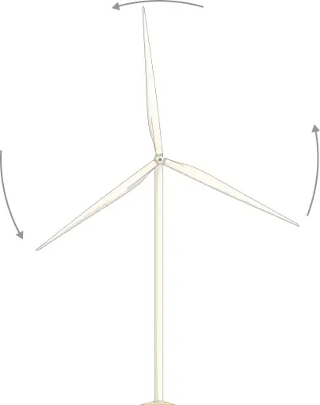
Strategy
- We are given the rotational sense of the turbine, which is counterclockwise in the plane of the page. Using the right hand rule (Figure 10.5), we can establish the directions of the angular velocity and acceleration vectors.
- We calculate the initial and final angular velocities to get the average angular acceleration. We establish the sign of the angular acceleration from the results in (a).
- We are given the functional form of the angular velocity, so we can find the functional form of the angular acceleration function by taking its derivative with respect to time.
Solution
a. Since the turbine is rotating counterclockwise, angular velocity \(\mathbf{\vec{\omega}}\) points out of the page. But since the angular velocity is decreasing, the angular acceleration \(\mathbf{\vec{\alpha}}\) points into the page, in the opposite sense to the angular velocity.
b. The initial angular velocity of the turbine, setting \(t=0,\:\text{is}\:\omega=9.0\:\text{rad}\text{/}\text{s}\). The final angular velocity is zero, so the average angular acceleration is
c. Taking the derivative of the angular velocity with respect to time gives \(\alpha=\frac{d\omega}{dt}=(t-30.0)\text{/}50.0\:\text{rad}\text{/}\text{s}^{2}\)
Significance
We found from the calculations in (a) and (b) that the angular acceleration \(\alpha\) and the average angular acceleration \(\bar{\alpha}\) are negative. The turbine has an angular acceleration in the opposite sense to its angular velocity.
We now have a basic vocabulary for discussing fixed-axis rotational kinematics and relationships between rotational variables. We discuss more definitions and connections in the next section.
10.2 Rotation with Constant Angular Acceleration¶
Learning Objectives
By the end of this section, you will be able to:
- Derive the kinematic equations for rotational motion with constant angular acceleration
- Select from the kinematic equations for rotational motion with constant angular acceleration the appropriate equations to solve for unknowns in the analysis of systems undergoing fixed-axis rotation
- Use solutions found with the kinematic equations to verify the graphical analysis of fixed-axis rotation with constant angular acceleration
In the preceding section, we defined the rotational variables of angular displacement, angular velocity, and angular acceleration. In this section, we work with these definitions to derive relationships among these variables and use these relationships to analyze rotational motion for a rigid body about a fixed axis under a constant angular acceleration. This analysis forms the basis for rotational kinematics. If the angular acceleration is constant, the equations of rotational kinematics simplify, similar to the equations of linear kinematics discussed in Motion along a Straight Line and Motion in Two and Three Dimensions. We can then use this simplified set of equations to describe many applications in physics and engineering where the angular acceleration of the system is constant. Rotational kinematics is also a prerequisite to the discussion of rotational dynamics later in this chapter.
Kinematics of Rotational Motion¶
Using our intuition, we can begin to see how the rotational quantities \(\theta,\) \(\omega,\) \(\alpha\), and t are related to one another. For example, we saw in the preceding section that if a flywheel has an angular acceleration in the same direction as its angular velocity vector, its angular velocity increases with time and its angular displacement also increases. On the contrary, if the angular acceleration is opposite to the angular velocity vector, its angular velocity decreases with time. We can describe these physical situations and many others with a consistent set of rotational kinematic equations under a constant angular acceleration. The method to investigate rotational motion in this way is called kinematics of rotational motion.
To begin, we note that if the system is rotating under a constant acceleration, then the average angular velocity follows a simple relation because the angular velocity is increasing linearly with time. The average angular velocity is just half the sum of the initial and final values:
equation callout
From the definition of the average angular velocity, we can find an equation that relates the angular position, average angular velocity, and time:
Solving for \(\theta\), we have
equation callout
where we have set \(t_{0}=0\). This equation can be very useful if we know the average angular velocity of the system. Then we could find the angular displacement over a given time period. Next, we find an equation relating \(\omega\), \(\alpha\), and t. To determine this equation, we start with the definition of angular acceleration:
We rearrange this to get \(\alpha dt=d\omega\) and then we integrate both sides of this equation from initial values to final values, that is, from \(t_{0}\) to t and \(\omega_{0}\:\text{to}\:\omega_{\text{f}}\). In uniform rotational motion, the angular acceleration is constant so it can be pulled out of the integral, yielding two definite integrals:
Setting \(t_{0}=0\), we have
We rearrange this to obtain
equation callout
where \(\omega_{0}\) is the initial angular velocity. Equation 10.11 is the rotational counterpart to the linear kinematics equation \(v_{\text{f}}=v_{0}+at\). With Equation 10.11, we can find the angular velocity of an object at any specified time t given the initial angular velocity and the angular acceleration.
Let’s now do a similar treatment starting with the equation \(\omega=\frac{d\theta}{dt}\). We rearrange it to obtain \(\omega dt=d\theta\) and integrate both sides from initial to final values again, noting that the angular acceleration is constant and does not have a time dependence. However, this time, the angular velocity is not constant (in general), so we substitute in what we derived above:
where we have set \(t_{0}=0\). Now we rearrange to obtain
equation callout
Equation 10.12 is the rotational counterpart to the linear kinematics equation found in Motion Along a Straight Line for position as a function of time. This equation gives us the angular position of a rotating rigid body at any time t given the initial conditions (initial angular position and initial angular velocity) and the angular acceleration.
We can find an equation that is independent of time by solving for t in Equation 10.11 and substituting into Equation 10.12. Equation 10.12 becomes
or
equation callout
Equation 10.10 through Equation 10.13 describe fixed-axis rotation for constant acceleration and are summarized in Table 10.1.
Table 10.1 Kinematic Equations
| Angular displacement from average angular velocity | \(\theta_{\text{f}}=\theta_{0}+\bar{\omega}t\) |
| Angular velocity from angular acceleration | \(\omega_{\text{f}}=\omega_{0}+\alpha t\) |
| Angular displacement from angular velocity and angular acceleration | \(\theta_{\text{f}}=\theta_{0}+\omega_{0}t+\frac{1}{2}\alpha t^{2}\) |
| Angular velocity from angular displacement and angular acceleration | \(\omega_{\text{f}}^{2}=\omega_{0}{}^{2}+2\alpha(\Delta\theta)\) |
Applying the Equations for Rotational Motion¶
Now we can apply the key kinematic relations for rotational motion to some simple examples to get a feel for how the equations can be applied to everyday situations.
Example 10.4 Calculating the Acceleration of a Fishing Reel
A deep-sea fisherman hooks a big fish that swims away from the boat, pulling the fishing line from his fishing reel. The whole system is initially at rest, and the fishing line unwinds from the reel at a radius of 4.50 cm from its axis of rotation. The reel is given an angular acceleration of \(110{\:\text{rad/s}}^{2}\) for 2.00 s (Figure 10.11).
(a) What is the final angular velocity of the reel after 2 s?
(b) How many revolutions does the reel make?
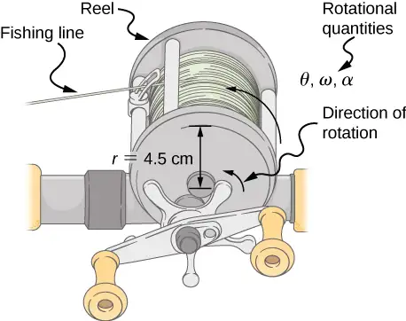
Strategy
Identify the knowns and compare with the kinematic equations for constant acceleration. Look for the appropriate equation that can be solved for the unknown, using the knowns given in the problem description.
Solution
a. We are given \(\alpha\) and t and want to determine \(\omega\). The most straightforward equation to use is \(\omega_{\text{f}}=\omega_{0}+\alpha t\), since all terms are known besides the unknown variable we are looking for. We are given that \(\omega_{0}=0\) (it starts from rest), so
b. We are asked to find the number of revolutions. Because \(1\:\text{rev}=2\pi\:\text{rad}\), we can find the number of revolutions by finding \(\theta\) in radians. We are given \(\alpha\) and t, and we know \(\omega_{0}\) is zero, so we can obtain \(\theta\) by using
Converting radians to revolutions gives
Significance
This example illustrates that relationships among rotational quantities are highly analogous to those among linear quantities. The answers to the questions are realistic. After unwinding for two seconds, the reel is found to spin at 220 rad/s, which is 2100 rpm. (No wonder reels sometimes make high-pitched sounds.)
In the preceding example, we considered a fishing reel with a positive angular acceleration. Now let us consider what happens with a negative angular acceleration.
Example 10.5 Calculating the Duration When the Fishing Reel Slows Down and Stops
Now the fisherman applies a brake to the spinning reel, achieving an angular acceleration of \(-300{\:\text{rad/s}}^{2}\). How long does it take the reel to come to a stop?
Strategy
We are asked to find the time t for the reel to come to a stop. The initial and final conditions are different from those in the previous problem, which involved the same fishing reel. Now we see that the initial angular velocity is \(\omega_{0}=220\:\text{rad}\text{/}\text{s}\) and the final angular velocity \(\omega\) is zero. The angular acceleration is given as \(\alpha=-300\:\text{rad/s}^{2}.\) Examining the available equations, we see all quantities but t are known in \(\omega_{\text{f}}=\omega_{0}+\alpha t\), making it easiest to use this equation.
Solution
The equation states
We solve the equation algebraically for t and then substitute the known values as usual, yielding
Significance
Note that care must be taken with the signs that indicate the directions of various quantities. Also, note that the time to stop the reel is fairly small because the acceleration is rather large. Fishing lines sometimes snap because of the accelerations involved, and fishermen often let the fish swim for a while before applying brakes on the reel. A tired fish is slower, requiring a smaller acceleration.
Check Your Understanding
A centrifuge used in DNA extraction spins at a maximum rate of 7000 rpm, producing a “g-force” on the sample that is 6000 times the force of gravity. If the centrifuge takes 10 seconds to come to rest from the maximum spin rate: (a) What is the angular acceleration of the centrifuge? (b) What is the angular displacement of the centrifuge during this time?
Answer
a. Using Equation 10.11, we have \(7000\:\text{rpm}=\frac{7000.0(2\pi\:\text{rad})}{60.0\:\text{s}}=733.0\:\text{rad}\text{/}\text{s},\)
\(\alpha=\frac{(\omega-\omega_{0})}{t}=\frac{(0-733.0\:\text{rad}\text{/}\text{s})}{10.0\:\text{s}}=-73.3\:\text{rad}\text{/}\text{s}^{2}\);
b. Using Equation 10.13, we have
\(\omega^{2}=\omega_{0}^{2}+2\alpha\Delta\theta\Rightarrow\Delta\theta=\frac{\omega^{2}-\omega_{0}^{2}}{2\alpha}=\frac{0-{(733.0\:\text{rad}\text{/}\text{s})}^{2}}{2(-73.3\:\text{rad}\text{/}\text{s}^{2})}=3665.2\:\text{rad}\)
Example 10.6 Angular Acceleration of a Propeller
Figure 10.12 shows a graph of the angular velocity of a propeller on an aircraft as a function of time. Its angular velocity starts at 30 rad/s and drops linearly to 0 rad/s over the course of 5 seconds. (a) Find the angular acceleration of the object and verify the result using the kinematic equations. (b) Find the angle through which the propeller rotates during these 5 seconds and verify your result using the kinematic equations.
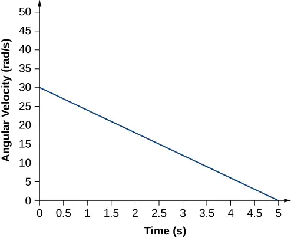
Strategy
a. Since the angular velocity varies linearly with time, we know that the angular acceleration is constant and does not depend on the time variable. The angular acceleration is the slope of the angular velocity vs. time graph, \(\alpha=\frac{d\omega}{dt}\). To calculate the slope, we read directly from Figure 10.12, and see that \(\omega_{0}=30\:\text{rad/s}\) at \(t=0\:\text{s}\) and \(\omega_{\text{f}}=0\:\text{rad/s}\) at \(t=5\:\text{s}\). Then, we can verify the result using \(\omega=\omega_{0}+\alpha t\).
b. We use the equation \(\omega=\frac{d\theta}{dt};\) since the time derivative of the angle is the angular velocity, we can find the angular displacement by integrating the angular velocity, which from the figure means taking the area under the angular velocity graph. In other words:
Then we use the kinematic equations for constant acceleration to verify the result.
Solution
a. Calculating the slope, we get
We see that this is exactly Equation 10.11 with a little rearranging of terms.
b. We can find the area under the curve by calculating the area of the right triangle, as shown in Figure 10.13.
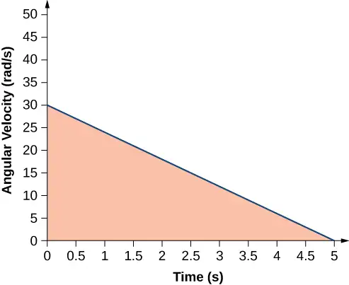
We verify the solution using Equation 10.12:
Setting \(\theta_{0}=0\), we have
This verifies the solution found from finding the area under the curve.
Significance
We see from part (b) that there are alternative approaches to analyzing fixed-axis rotation with constant acceleration. We started with a graphical approach and verified the solution using the rotational kinematic equations. Since \(\alpha=\frac{d\omega}{dt}\), we could do the same graphical analysis on an angular acceleration-vs.-time curve. The area under an \(\alpha\text{-vs.-}t\) curve gives us the change in angular velocity. Since the angular acceleration is constant in this section, this is a straightforward exercise.
10.3 Relating Angular and Translational Quantities¶
Learning Objectives
By the end of this section, you will be able to:
- Given the linear kinematic equation, write the corresponding rotational kinematic equation
- Calculate the linear distances, velocities, and accelerations of points on a rotating system given the angular velocities and accelerations
In this section, we relate each of the rotational variables to the translational variables defined in Motion Along a Straight Line and Motion in Two and Three Dimensions. This will complete our ability to describe rigid-body rotations.
Angular vs. Linear Variables¶
In Rotational Variables, we introduced angular variables. If we compare the rotational definitions with the definitions of linear kinematic variables from Motion Along a Straight Line and Motion in Two and Three Dimensions, we find that there is a mapping of the linear variables to the rotational ones. Linear position, velocity, and acceleration have their rotational counterparts, as we can see when we write them side by side:
| Linear | Rotational | |
|---|---|---|
| Position | x | \(\theta\) |
| Velocity | \(v=\frac{dx}{dt}\) | \(\omega=\frac{d\theta}{dt}\) |
| Acceleration | \(a=\frac{dv}{dt}\) | \(\alpha=\frac{d\omega}{dt}\) |
Let’s compare the linear and rotational variables individually. The linear variable of position has physical units of meters, whereas the angular position variable has dimensionless units of radians, as can be seen from the definition of \(\theta=\frac{s}{r}\), which is the ratio of two lengths. The linear velocity has units of m/s, and its counterpart, the angular velocity, has units of rad/s. In Rotational Variables, we saw in the case of circular motion that the linear tangential speed of a particle at a radius r from the axis of rotation is related to the angular velocity by the relation \(v_{\text{t}}=r\omega\). This could also apply to points on a rigid body rotating about a fixed axis. Here, we consider only circular motion. In circular motion, both uniform and nonuniform, there exists a centripetal acceleration (Motion in Two and Three Dimensions). The centripetal acceleration vector points inward from the particle executing circular motion toward the axis of rotation. The derivation of the magnitude of the centripetal acceleration is given in Motion in Two and Three Dimensions. From that derivation, the magnitude of the centripetal acceleration was found to be
where r is the radius of the circle.
Thus, in uniform circular motion when the angular velocity is constant and the angular acceleration is zero, we have a linear acceleration—that is, centripetal acceleration—since the tangential speed in Equation 10.14 is a constant. If nonuniform circular motion is present, the rotating system has an angular acceleration, and we have both a linear centripetal acceleration that is changing (because \(v_{\text{t}}\) is changing) as well as a linear tangential acceleration. These relationships are shown in Figure 10.14, where we show the centripetal and tangential accelerations for uniform and nonuniform circular motion.
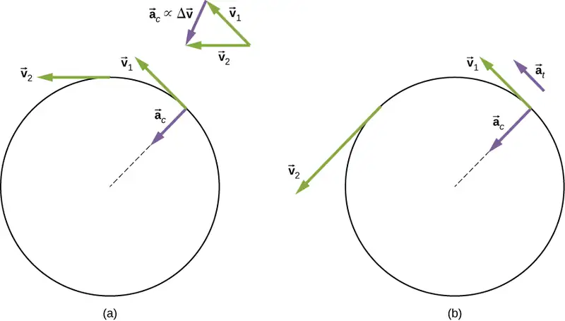
The centripetal acceleration is due to the change in the direction of tangential velocity, whereas the tangential acceleration is due to any change in the magnitude of the tangential velocity. The tangential and centripetal acceleration vectors \({\mathbf{\vec{a}}}_{\text{t}}\) and \({\mathbf{\vec{a}}}_{\text{c}}\) are always perpendicular to each other, as seen in Figure 10.14. To complete this description, we can assign a total linear acceleration vector to a point on a rotating rigid body or a particle executing circular motion at a radius r from a fixed axis. The total linear acceleration vector \(\mathbf{\vec{a}}\) is the vector sum of the centripetal and tangential accelerations,
equation callout
The total linear acceleration vector in the case of nonuniform circular motion points at an angle between the centripetal and tangential acceleration vectors, as shown in Figure 10.15. Since \({\mathbf{\vec{a}}}_{\text{c}}\perp{\mathbf{\vec{a}}}_{\text{t}}\), the magnitude of the total linear acceleration is
Note that if the angular acceleration is zero, the total linear acceleration is equal to the centripetal acceleration.
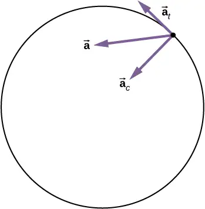
Relationships between Rotational and Translational Motion¶
We can look at two relationships between rotational and translational motion.
1. Generally speaking, the linear kinematic equations have their rotational counterparts. Table 10.2 lists the four linear kinematic equations and the corresponding rotational counterpart. The two sets of equations look similar to each other, but describe two different physical situations, that is, rotation and translation.
Table 10.2 Rotational and Translational Kinematic Equations
| Rotational | Translational |
|---|---|
| \(\theta_{\text{f}}=\theta_{0}+\bar{\omega}t\) | \(x=x_{0}+\bar{v}t\) |
| \(\omega_{\text{f}}=\omega_{0}+\alpha t\) | \(v_{\text{f}}=v_{0}+at\) |
| \(\theta_{\text{f}}=\theta_{0}+\omega_{0}t+\frac{1}{2}\alpha t^{2}\) | \(x_{\text{f}}=x_{0}+v_{0}t+\frac{1}{2}at^{2}\) |
| \(\omega_{\text{f}}^{2}=\omega_{0}^{2}+2\alpha(\Delta\theta)\) | \(v_{\text{f}}^{2}=v_{0}^{2}+2a(\Delta x)\) |
2. The second correspondence has to do with relating linear and rotational variables in the special case of circular motion. This is shown in Table 10.3, where in the third column, we have listed the connecting equation that relates the linear variable to the rotational variable. The rotational variables of angular velocity and acceleration have subscripts that indicate their definition in circular motion.
Table 10.3 Rotational and Translational Quantities: Circular Motion
| Rotational | Translational | Relationship (\(r=\text{radius}\)) |
|---|---|---|
| \(\theta\) | s | \(\theta=\frac{s}{r}\) |
| \(\omega\) | \(v_{\text{t}}\) | \(\omega=\frac{v_{\text{t}}}{r}\) |
| \(\alpha\) | \(a_{\text{t}}\) | \(\alpha=\frac{a_{\text{t}}}{r}\) |
| \(a_{\text{c}}\) | \(a_{\text{c}}=\frac{v_{\text{t}}^{2}}{r}\) |
Example 10.7 Linear Acceleration of a Centrifuge
A centrifuge has a radius of 20 cm and accelerates from a maximum rotation rate of 10,000 rpm to rest in 30 seconds under a constant angular acceleration. It is rotating counterclockwise. What is the magnitude of the total acceleration of a point at the tip of the centrifuge at \(t=29.0\text{s?}\) What is the direction of the total acceleration vector?
Strategy
With the information given, we can calculate the angular acceleration, which then will allow us to find the tangential acceleration. We can find the centripetal acceleration at \(t=0\) by calculating the tangential speed at this time. With the magnitudes of the accelerations, we can calculate the total linear acceleration. From the description of the rotation in the problem, we can sketch the direction of the total acceleration vector.
Solution
The angular acceleration is
Therefore, the tangential acceleration is
The angular velocity at \(t=29.0\:\text{s}\) is
Thus, the tangential speed at \(t=29.0\:\text{s}\) is
We can now calculate the centripetal acceleration at \(t=29.0\:\text{s}\):
Since the two acceleration vectors are perpendicular to each other, the magnitude of the total linear acceleration is
Since the centrifuge has a negative angular acceleration, it is slowing down. The total acceleration vector is as shown in Figure 10.16. The angle with respect to the centripetal acceleration vector is
The negative sign means that the total acceleration vector is angled toward the clockwise direction.
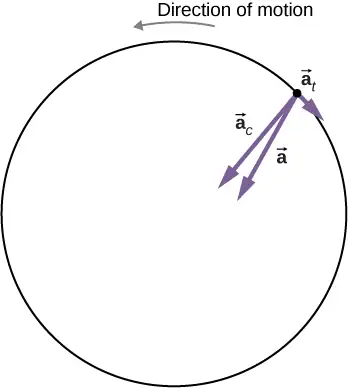
Significance
From Figure 10.16, we see that the tangential acceleration vector is opposite the direction of rotation. The magnitude of the tangential acceleration is much smaller than the centripetal acceleration, so the total linear acceleration vector will make a very small angle with respect to the centripetal acceleration vector.
Check Your Understanding
A boy jumps on a merry-go-round with a radius of 5 m that is at rest. It starts accelerating at a constant rate up to an angular velocity of 5 rad/s in 20 seconds. What is the distance travelled by the boy?
Answer
The angular acceleration is \(\alpha=\frac{(5.0-0)\text{rad}\text{/}\text{s}}{20.0\:\text{s}}=0.25\:\text{rad}\text{/}\text{s}^{2}\). Therefore, the total angle that the boy passes through is
\(\Delta\theta=\frac{\omega^{2}-\omega_{0}^{2}}{2\alpha}=\frac{{(5.0)}^{2}-0}{2(0.25)}=50\:\text{rad}\).
Thus, we calculate
\(s=r\theta=5.0\:\text{m}(50.0\:\text{rad})=250.0\:\text{m}\).
Media
Check out this PhET simulation to change the parameters of a rotating disk (the initial angle, angular velocity, and angular acceleration), and place bugs at different radial distances from the axis. The simulation then lets you explore how circular motion relates to the bugs’ xy-position, velocity, and acceleration using vectors or graphs.
10.4 Moment of Inertia and Rotational Kinetic Energy¶
Learning Objectives
By the end of this section, you will be able to:
- Describe the differences between rotational and translational kinetic energy
- Define the physical concept of moment of inertia in terms of the mass distribution from the rotational axis
- Explain how the moment of inertia of rigid bodies affects their rotational kinetic energy
- Use conservation of mechanical energy to analyze systems undergoing both rotation and translation
- Calculate the angular velocity of a rotating system when there are energy losses due to nonconservative forces
So far in this chapter, we have been working with rotational kinematics: the description of motion for a rotating rigid body with a fixed axis of rotation. In this section, we define two new quantities that are helpful for analyzing properties of rotating objects: moment of inertia and rotational kinetic energy. With these properties defined, we will have two important tools we need for analyzing rotational dynamics.
Rotational Kinetic Energy¶
Any moving object has kinetic energy. We know how to calculate this for a body undergoing translational motion, but how about for a rigid body undergoing rotation? This might seem complicated because each point on the rigid body has a different velocity. However, we can make use of angular velocity—which is the same for the entire rigid body—to express the kinetic energy for a rotating object. Figure 10.17 shows an example of a very energetic rotating body: an electric grindstone propelled by a motor. Sparks are flying, and noise and vibration are generated as the grindstone does its work. This system has considerable energy, some of it in the form of heat, light, sound, and vibration. However, most of this energy is in the form of rotational kinetic energy.
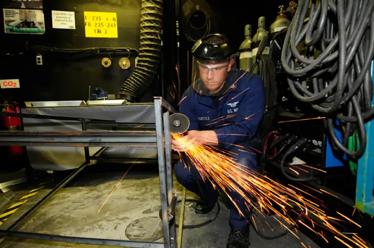
Energy in rotational motion is not a new form of energy; rather, it is the energy associated with rotational motion, the same as kinetic energy in translational motion. However, because kinetic energy is given by \(K=\frac{1}{2}mv^{2}\), and velocity is a quantity that is different for every point on a rotating body about an axis, it makes sense to find a way to write kinetic energy in terms of the variable \(\omega\), which is the same for all points on a rigid rotating body. For a single particle rotating around a fixed axis, this is straightforward to calculate. We can relate the angular velocity to the magnitude of the translational velocity using the relation \(v_{\text{t}}=\omega r\), where r is the distance of the particle from the axis of rotation and \(v_{\text{t}}\) is its tangential speed. Substituting into the equation for kinetic energy, we find
In the case of a rigid rotating body, we can divide up any body into a large number of smaller masses, each with a mass \(m_{j}\) and distance to the axis of rotation \(r_{j}\), such that the total mass of the body is equal to the sum of the individual masses: \(M=\displaystyle \sum_{j}m_{j}\). Each smaller mass has tangential speed \(v_{j}\), where we have dropped the subscript t for the moment. The total kinetic energy of the rigid rotating body is
and since \(\omega_{j}=\omega\) for all masses,
equation callout
The units of Equation 10.16 are joules (J). The equation in this form is complete, but awkward; we need to find a way to generalize it.
Moment of Inertia¶
If we compare Equation 10.16 to the way we wrote kinetic energy in Work and Kinetic Energy, \(\left( \frac{1}{2}mv^{2} \right)\), this suggests we have a new rotational variable to add to our list of our relations between rotational and translational variables. The quantity \(\displaystyle \sum_{j}m_{j}r_{j}^{2}\) is the counterpart for mass in the equation for rotational kinetic energy. This is an important new term for rotational motion. This quantity is called the moment of inertia I, with units of \(\text{kg}\cdot\text{m}^{2}\):
equation callout
For now, we leave the expression in summation form, representing the moment of inertia of a system of point particles rotating about a fixed axis. We note that the moment of inertia of a single point particle about a fixed axis is simply \(mr^{2}\), with r being the distance from the point particle to the axis of rotation. In the next section, we explore the integral form of this equation, which can be used to calculate the moment of inertia of some regular-shaped rigid bodies.
The moment of inertia is the quantitative measure of rotational inertia, just as in translational motion, and mass is the quantitative measure of linear inertia—that is, the more massive an object is, the more inertia it has, and the greater is its resistance to change in linear velocity. Similarly, the greater the moment of inertia of a rigid body or system of particles, the greater is its resistance to change in angular velocity about a fixed axis of rotation. It is interesting to see how the moment of inertia varies with r, the distance to the axis of rotation of the mass particles in Equation 10.17. Rigid bodies and systems of particles with more mass concentrated at a greater distance from the axis of rotation have greater moments of inertia than bodies and systems of the same mass, but concentrated near the axis of rotation. In this way, we can see that a hollow cylinder has more rotational inertia than a solid cylinder of the same mass when rotating about an axis through the center. Substituting Equation 10.17 into Equation 10.16, the expression for the kinetic energy of a rotating rigid body becomes
equation callout
We see from this equation that the kinetic energy of a rotating rigid body is directly proportional to the moment of inertia and the square of the angular velocity. This is exploited in flywheel energy-storage devices, which are designed to store large amounts of rotational kinetic energy. Many carmakers are now testing flywheel energy storage devices in their automobiles, such as the flywheel, or kinetic energy recovery system, shown in Figure 10.18.
The rotational and translational quantities for kinetic energy and inertia are summarized in Table 10.4. The relationship column is not included because a constant doesn’t exist by which we could multiply the rotational quantity to get the translational quantity, as can be done for the variables in Table 10.3.
Table 10.4 Rotational and Translational Kinetic Energies and Inertia
| Rotational | Translational |
|---|---|
| \(I=\displaystyle \sum_{j}m_{j}r_{j}^{2}\) | \(m\) |
| \(K=\frac{1}{2}I\omega^{2}\) | \(K=\frac{1}{2}mv^{2}\) |
Example 10.8 Moment of Inertia of a System of Particles
Six small washers are spaced 10 cm apart on a rod of negligible mass and 0.5 m in length. The mass of each washer is 20 g. The rod rotates about an axis located at 25 cm, as shown in Figure 10.19. (a) What is the moment of inertia of the system? (b) If the two washers closest to the axis are removed, what is the moment of inertia of the remaining four washers? (c) If the system with six washers rotates at 5 rev/s, what is its rotational kinetic energy?
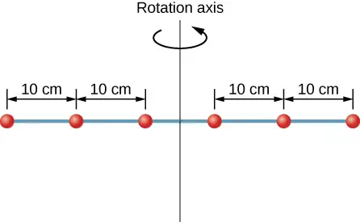
Strategy
- We use the definition for moment of inertia for a system of particles and perform the summation to evaluate this quantity. The masses are all the same so we can pull that quantity in front of the summation symbol.
- We do a similar calculation.
- We insert the result from (a) into the expression for rotational kinetic energy.
Solution
- \(I=\displaystyle \sum_{j}m_{j}r_{j}^{2}=(0.02\:\text{kg})(2\:\times\:{(0.25\:\text{m})}^{2}+2\:\times\:{(0.15\:\text{m})}^{2}+2\:\times\:{(0.05\:\text{m})}^{2})=0.0035\:\text{kg}\cdot\text{m}^{2}\).
- \(I=\displaystyle \sum_{j}m_{j}r_{j}^{2}=(0.02\:\text{kg})(2\:\times\:{(0.25\:\text{m})}^{2}+2\:\times\:{(0.15\:\text{m})}^{2})=0.0034\:\text{kg}\cdot\text{m}^{2}\).
- \(K=\frac{1}{2}I\omega^{2}=\frac{1}{2}(0.0035\:\text{kg}\cdot\text{m}^{2})(5.0\:\times\:2\pi\:\text{rad}\text{/}\text{s})^{2}=1.73\:\text{J}\).
Significance
We can see the individual contributions to the moment of inertia. The masses close to the axis of rotation have a very small contribution. When we removed them, it had a very small effect on the moment of inertia.
In the next section, we generalize the summation equation for point particles and develop a method to calculate moments of inertia for rigid bodies. For now, though, Figure 10.20 gives values of moment of inertia for common object shapes around specified axes.
![Figure shows ten rotating objects. These are hoop rotating about cylinder axis, solid cylinder or disk rotating about cylinder axis, thin rod rotating about axis through center solid sphere rotating about diameter, hoop rotating about diameter, annular cylinder rotating about cylinder axis, solid cylinder or disk rotating about central diameter, thin road rotating about the axis through one end perpendicular to the length, thin spherical shell about any diameter, slab about perpendicular axis through center.](img/cnx-uphysics-10-04-rotinertia.webp)
Applying Rotational Kinetic Energy¶
Now let’s apply the ideas of rotational kinetic energy and the moment of inertia table to get a feeling for the energy associated with a few rotating objects. The following examples will also help get you comfortable using these equations. First, let’s look at a general problem-solving strategy for rotational energy.
Problem-Solving Strategy: Rotational Energy
- Determine that energy or work is involved in the rotation.
- Determine the system of interest. A sketch usually helps.
- Analyze the situation to determine the types of work and energy involved.
- If there are no losses of energy due to friction and other nonconservative forces, mechanical energy is conserved, that is, \(K_{\text{i}}+U_{\text{i}}=K_{\text{f}}+U_{\text{f}}\).
- If nonconservative forces are present, mechanical energy is not conserved, and other forms of energy, such as heat and light, may enter or leave the system. Determine what they are and calculate them as necessary.
- Eliminate terms wherever possible to simplify the algebra.
- Evaluate the numerical solution to see if it makes sense in the physical situation presented in the wording of the problem.
Example 10.9 Calculating Helicopter Energies
A typical small rescue helicopter has four blades: Each is 4.00 m long and has a mass of 50.0 kg (Figure 10.21). The blades can be approximated as thin rods that rotate about one end of an axis perpendicular to their length. The helicopter has a total loaded mass of 1000 kg. (a) Calculate the rotational kinetic energy in the blades when they rotate at 300 rpm. (b) Calculate the translational kinetic energy of the helicopter when it flies at 20.0 m/s, and compare it with the rotational energy in the blades.
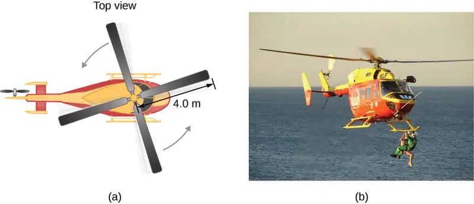
Strategy
Rotational and translational kinetic energies can be calculated from their definitions. The wording of the problem gives all the necessary constants to evaluate the expressions for the rotational and translational kinetic energies.
Solution
a. The rotational kinetic energy is
We must convert the angular velocity to radians per second and calculate the moment of inertia before we can find K. The angular velocity \(\omega\) is
The moment of inertia of one blade is that of a thin rod rotated about its end, listed in Figure 10.20. The total I is four times this moment of inertia because there are four blades. Thus,
Entering \(\omega\) and I into the expression for rotational kinetic energy gives
b. Entering the given values into the equation for translational kinetic energy, we obtain
To compare kinetic energies, we take the ratio of translational kinetic energy to rotational kinetic energy. This ratio is
Significance
The ratio of translational energy to rotational kinetic energy is only 0.380. This ratio tells us that most of the kinetic energy of the helicopter is in its spinning blades.
Example 10.10 Energy in a Boomerang
A person hurls a boomerang into the air with a velocity of 30.0 m/s at an angle of \(40.0{}^{\circ}\) with respect to the horizontal (Figure 10.22). It has a mass of 1.0 kg and is rotating at 10.0 rev/s. The moment of inertia of the boomerang is given as \(I=\frac{1}{12}mL^{2}\) where \(L=0.7\:\text{m}\). (a) What is the total energy of the boomerang when it leaves the hand? (b) How high does the boomerang go from the elevation of the hand, neglecting air resistance?
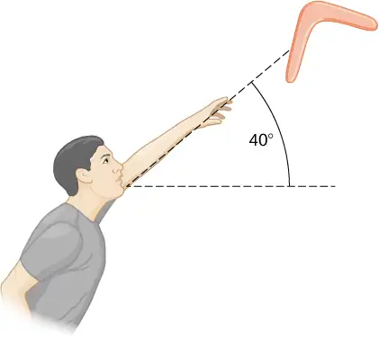
Strategy
We use the definitions of rotational and linear kinetic energy to find the total energy of the system. The problem states to neglect air resistance, so we don’t have to worry about energy loss. In part (b), we use conservation of mechanical energy to find the maximum height of the boomerang.
Solution
a. Moment of inertia: \(I=\frac{1}{12}mL^{2}=\frac{1}{12}(1.0\:\text{kg})(0.7\text{m})^{2}=0.041\:\text{kg}\cdot\text{m}^{2}\).
Angular velocity: \(\omega=(10.0\:\text{rev}\text{/}\text{s})(2\pi)=62.83\:\text{rad}\text{/}\text{s}\).
The rotational kinetic energy is therefore
The translational kinetic energy is
Thus, the total energy in the boomerang is
b. We use conservation of mechanical energy. Since the boomerang is launched at an angle, we need to write the total energies of the system in terms of its linear kinetic energies using the velocity in the x- and y-directions. The total energy when the boomerang leaves the hand is
The total energy at maximum height is
By conservation of mechanical energy, \(E_{\text{Before}}=E_{\text{Final}}\) so we have, after canceling like terms,
Since \(v_{y}=30.0\:\text{m}\text{/}\text{s}(\sin\:40{}^{\circ})=19.28\:\text{m}\text{/}\text{s}\), we find
Significance
In part (b), the solution demonstrates how energy conservation is an alternative method to solve a problem that normally would be solved using kinematics. In the absence of air resistance, the rotational kinetic energy was not a factor in the solution for the maximum height.
Check Your Understanding
A nuclear submarine propeller has a moment of inertia of \(800.0\:\text{kg}\cdot\text{m}^{2}\). If the submerged propeller has a rotation rate of 4.0 rev/s when the engine is cut, what is the rotation rate of the propeller after 5.0 s when water resistance has taken 50,000 J out of the system?
Answer
The initial rotational kinetic energy of the propeller is
\(K_{0}=\frac{1}{2}I\omega^{2}=\frac{1}{2}(800.0{\:\text{kg-m}}^{2})(4.0\:\times\:2\pi\:\text{rad}\text{/}\text{s})^{2}=2.53\:\times\:{10}^{5}\:\text{J}\).
At 5.0 s the new rotational kinetic energy of the propeller is
\(K_{\text{f}}=2.03\:\times\:{10}^{5}\:\text{J}\).
and the new angular velocity is
\(\omega=\sqrt{\frac{2(2.03\:\times\:{10}^{5}\:\text{J})}{800.0{\:\text{kg-m}}^{2}}}=22.53\:\text{rad}\text{/}\text{s}\)
which is 3.58 rev/s.
10.5 Calculating Moments of Inertia¶
Learning Objectives
By the end of this section, you will be able to:
- Calculate the moment of inertia for uniformly shaped, rigid bodies
- Apply the parallel axis theorem to find the moment of inertia about any axis parallel to one already known
- Calculate the moment of inertia for compound objects
In the preceding section, we defined the moment of inertia but did not show how to calculate it. In this section, we show how to calculate the moment of inertia for several standard types of objects, as well as how to use known moments of inertia to find the moment of inertia for a shifted axis or for a compound object. This section is very useful for seeing how to apply a general equation to complex objects (a skill that is critical for more advanced physics and engineering courses).
Moment of Inertia¶
We defined the moment of inertia I of an object to be \(I=\displaystyle \sum_{i}m_{i}r_{i}^{2}\) for all the point masses that make up the object. Because r is the distance to the axis of rotation from each piece of mass that makes up the object, the moment of inertia for any object depends on the chosen axis. To see this, let’s take a simple example of two masses at the end of a massless (negligibly small mass) rod (Figure 10.23) and calculate the moment of inertia about two different axes. In this case, the summation over the masses is simple because the two masses at the end of the barbell can be approximated as point masses, and the sum therefore has only two terms.
In the case with the axis in the center of the barbell, each of the two masses m is a distance R away from the axis, giving a moment of inertia of
In the case with the axis at the end of the barbell—passing through one of the masses—the moment of inertia is
From this result, we can conclude that it is twice as hard to rotate the barbell about the end than about its center.
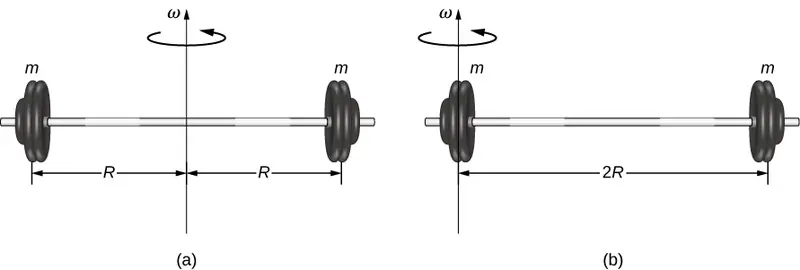
In this example, we had two point masses and the sum was simple to calculate. However, to deal with objects that are not point-like, we need to think carefully about each of the terms in the equation. The equation asks us to sum over each ‘piece of mass’ a certain distance from the axis of rotation. But what exactly does each ‘piece of mass’ mean? Recall that in our derivation of this equation, each piece of mass had the same magnitude of velocity, which means the whole piece had to have a single distance r to the axis of rotation. However, this is not possible unless we take an infinitesimally small piece of mass dm, as shown in Figure 10.24.
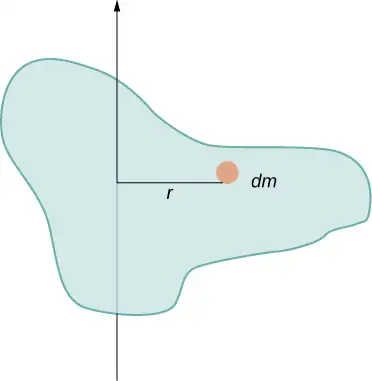
The need to use an infinitesimally small piece of mass dm suggests that we can write the moment of inertia by evaluating an integral over infinitesimal masses rather than doing a discrete sum over finite masses:
equation callout
This, in fact, is the form we need to generalize the equation for complex shapes. It is best to work out specific examples in detail to get a feel for how to calculate the moment of inertia for specific shapes. This is the focus of most of the rest of this section.
A uniform thin rod with an axis through the center¶
Consider a uniform (density and shape) thin rod of mass M and length L as shown in Figure 10.25. We want a thin rod so that we can assume the cross-sectional area of the rod is small and the rod can be thought of as a string of masses along a one-dimensional straight line. In this example, the axis of rotation is perpendicular to the rod and passes through the midpoint for simplicity. Our task is to calculate the moment of inertia about this axis. We orient the axes so that the z-axis is the axis of rotation and the x-axis passes through the length of the rod, as shown in the figure. This is a convenient choice because we can then integrate along the x-axis.
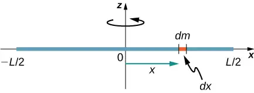
We define dm to be a small element of mass making up the rod. The moment of inertia integral is an integral over the mass distribution. However, we know how to integrate over space, not over mass. We therefore need to find a way to relate mass to spatial variables. We do this using the linear mass density \(\lambda\) of the object, which is the mass per unit length. Since the mass density of this object is uniform, we can write
If we take the differential of each side of this equation, we find
since \(\lambda\) is constant. We chose to orient the rod along the x-axis for convenience—this is where that choice becomes very helpful. Note that a piece of the rod dl lies completely along the x-axis and has a length dx; in fact, \(dL=dx\) in this situation. We can therefore write \(dm=\lambda(dx)\), giving us an integration variable that we know how to deal with. The distance of each piece of mass dm from the axis is given by the variable x, as shown in the figure. Putting this all together, we obtain
The last step is to be careful about our limits of integration. The rod extends from \(x=-L\text{/}2\) to \(x=L\text{/}2\), since the axis is in the middle of the rod at \(x=0\). This gives us
Next, we calculate the moment of inertia for the same uniform thin rod but with a different axis choice so we can compare the results. We would expect the moment of inertia to be smaller about an axis through the center of mass than the endpoint axis, just as it was for the barbell example at the start of this section. This happens because more mass is distributed farther from the axis of rotation.
A uniform thin rod with axis at the end¶
Now consider the same uniform thin rod of mass M and length L, but this time we move the axis of rotation to the end of the rod. We wish to find the moment of inertia about this new axis (Figure 10.26). The quantity dm is again defined to be a small element of mass making up the rod. Just as before, we obtain
However, this time we have different limits of integration. The rod extends from \(x=0\) to \(x=L\), since the axis is at the end of the rod at \(x=0\). Therefore we find
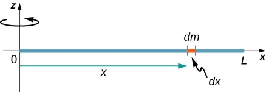
Note the rotational inertia of the rod about its endpoint is larger than the rotational inertia about its center (consistent with the barbell example) by a factor of four.
The Parallel-Axis Theorem¶
The similarity between the process of finding the moment of inertia of a rod about an axis through its middle and about an axis through its end is striking, and suggests that there might be a simpler method for determining the moment of inertia for a rod about any axis parallel to the axis through the center of mass. Such an axis is called a parallel axis. There is a theorem for this, called the parallel-axis theorem, which we state here but do not derive in this text.
Parallel-Axis Theorem
Let m be the mass of an object and let d be the distance from an axis through the object’s center of mass to a new axis. Then we have
Let’s apply this to the rod examples solved above:
This result agrees with our more lengthy calculation from above. This is a useful equation that we apply in some of the examples and problems.
Check Your Understanding
What is the moment of inertia of a cylinder of radius R and mass m about an axis through a point on the surface, as shown below?
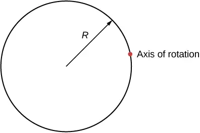
Answer
\(I_{\text{parallel-axis}}=I_{\text{center of mass}}+md^{2}=mR^{2}+mR^{2}=\left( \frac{1}{3} \right)mR^{2}\)
A uniform thin disk about an axis through the center¶
Integrating to find the moment of inertia of a two-dimensional object is a little bit trickier, but one shape is commonly done at this level of study—a uniform thin disk about an axis through its center (Figure 10.27).
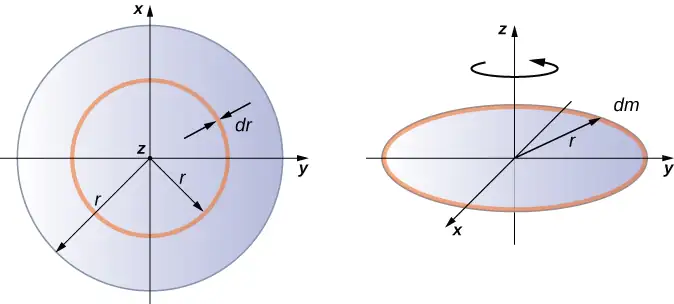
Since the disk is thin, we can take the mass as distributed entirely in the xy-plane. We again start with the relationship for the surface mass density, which is the mass per unit surface area. Since it is uniform, the surface mass density \(\sigma\) is constant:
Now we use a simplification for the area. The area can be thought of as made up of a series of thin rings, where each ring is a mass increment dm of radius r equidistant from the axis, as shown in part (b) of the figure. The infinitesimal area of each ring dA is therefore given by the length of each ring (\(2\pi r\)) times the infinitesimal width of each ring dr:
The full area of the disk is then made up from adding all the thin rings with a radius range from 0 to R. This radius range then becomes our limits of integration for dr, that is, we integrate from \(r=0\) to \(r=R\). Putting this all together, we have
Note that this agrees with the value given in Figure 10.20.
Calculating the moment of inertia for compound objects¶
Now consider a compound object such as that in Figure 10.28, which depicts a thin disk at the end of a thin rod. This cannot be easily integrated to find the moment of inertia because it is not a uniformly shaped object. However, if we go back to the initial definition of moment of inertia as a summation, we can reason that a compound object’s moment of inertia can be found from the sum of each part of the object:
equation callout
It is important to note that the moments of inertia of the objects in Equation 10.21 are about a common axis. In the case of this object, that would be a rod of length L rotating about its end, and a thin disk of radius R rotating about an axis shifted off of the center by a distance \(L+R\), where R is the radius of the disk. Let’s define the mass of the rod to be \(m_{\text{r}}\) and the mass of the disk to be \(m_{\text{d}}.\)
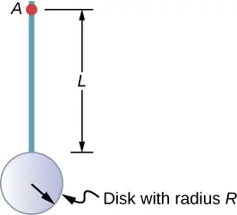
The moment of inertia of the rod is simply \(\frac{1}{3}m_{\text{r}}L^{2}\), but we have to use the parallel-axis theorem to find the moment of inertia of the disk about the axis shown. The moment of inertia of the disk about its center is \(\frac{1}{2}m_{\text{d}}R^{2}\) and we apply the parallel-axis theorem \(I_{\text{parallel-axis}}=I_{\text{center of mass}}+md^{2}\) to find
Adding the moment of inertia of the rod plus the moment of inertia of the disk with a shifted axis of rotation, we find the moment of inertia for the compound object to be
Applying moment of inertia calculations to solve problems¶
Now let’s examine some practical applications of moment of inertia calculations.
Example 10.11 Person on a Merry-Go-Round
A 25-kg child stands at a distance \(r=1.0\:\text{m}\) from the axis of a rotating merry-go-round (Figure 10.29). The merry-go-round can be approximated as a uniform solid disk with a mass of 500 kg and a radius of 2.0 m. Find the moment of inertia of this system.
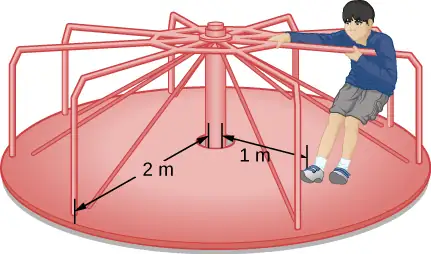
Strategy
This problem involves the calculation of a moment of inertia. We are given the mass and distance to the axis of rotation of the child as well as the mass and radius of the merry-go-round. Since the mass and size of the child are much smaller than the merry-go-round, we can approximate the child as a point mass. The notation we use is \(m_{\text{c}}=25\:\text{kg},r_{\text{c}}=1.0\:\text{m},m_{\text{m}}=500\:\text{kg},r_{\text{m}}=2.0\:\text{m}\).
Our goal is to find \(I_{\text{total}}=\displaystyle \sum_{i}I_{i}\).
Solution
For the child, \(I_{\text{c}}=m_{\text{c}}r^{2}\), and for the merry-go-round, \(I_{\text{m}}=\frac{1}{2}m_{\text{m}}r^{2}\). Therefore
Significance
The value should be close to the moment of inertia of the merry-go-round by itself because it has much more mass distributed away from the axis than the child does.
Example 10.12 Rod and Solid Sphere
Find the moment of inertia of the rod and solid sphere combination about the two axes as shown below. The rod has length 0.5 m and mass 2.0 kg. The radius of the sphere is 20.0 cm and has mass 1.0 kg.
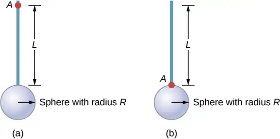
Strategy
Since we have a compound object in both cases, we can use the parallel-axis theorem to find the moment of inertia about each axis. In (a), the center of mass of the sphere is located at a distance \(L+R\) from the axis of rotation. In (b), the center of mass of the sphere is located a distance R from the axis of rotation. In both cases, the moment of inertia of the rod is about an axis at one end. Refer to Table 10.4 for the moments of inertia for the individual objects.
- \(I_{\text{total}}=\displaystyle \sum_{i}I_{i}=I_{\text{Rod}}+I_{\text{Sphere}}\);
\(I_{\text{Sphere}}=I_{\text{center of mass}}+m_{\text{Sphere}}{(L+R)}^{2}=\frac{2}{5}m_{\text{Sphere}}R^{2}+m_{\text{Sphere}}{(L+R)}^{2}\);
\(I_{\text{total}}=I_{\text{Rod}}+I_{\text{Sphere}}=\frac{1}{3}m_{\text{Rod}}L^{2}+\frac{2}{5}m_{\text{Sphere}}R^{2}+m_{\text{Sphere}}{(L+R)}^{2};\)
\(I_{\text{total}}=\frac{1}{3}(2.0\:\text{kg}){(0.5\:\text{m})}^{2}+\frac{2}{5}(1.0\:\text{kg})(0.2\:\text{m})^{2}+(1.0\:\text{kg}){(0.5\:\text{m}+0.2\:\text{m})}^{2};\)
\(I_{\text{total}}=(0.167+0.016+0.490)\:\text{kg}\cdot\text{m}^{2}=0.673\:\text{kg}\cdot\text{m}^{2}.\) - \(I_{\text{Sphere}}=\frac{2}{5}m_{\text{Sphere}}R^{2}+m_{\text{Sphere}}R^{2}\);
\(I_{\text{total}}=I_{\text{Rod}}+I_{\text{Sphere}}=\frac{1}{3}m_{\text{Rod}}L^{2}+\frac{2}{5}m_{\text{Sphere}}R^{2}+m_{\text{Sphere}}R^{2}\);
\(I_{\text{total}}=\frac{1}{3}(2.0\:\text{kg}){(0.5\:\text{m})}^{2}+\frac{2}{5}(1.0\:\text{kg})(0.2\:\text{m})^{2}+(1.0\:\text{kg}){(0.2\:\text{m})}^{2}\);
\(I_{\text{total}}=(0.167+0.016+0.04)\:\text{kg}\cdot\text{m}^{2}=0.223\:\text{kg}\cdot\text{m}^{2}.\)
Significance
Using the parallel-axis theorem eases the computation of the moment of inertia of compound objects. We see that the moment of inertia is greater in (a) than (b). This is because the axis of rotation is closer to the center of mass of the system in (b). The simple analogy is that of a rod. The moment of inertia about one end is \(\frac{1}{3}mL^{2}\), but the moment of inertia through the center of mass along its length is \(\frac{1}{12}mL^{2}\).
Example 10.13 Angular Velocity of a Pendulum
A pendulum in the shape of a rod (Figure 10.30) is released from rest at an angle of \(30{}^{\circ}\). It has a length 30 cm and mass 300 g. What is its angular velocity at its lowest point?
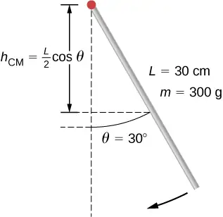
Strategy
Use conservation of energy to solve the problem. At the point of release, the pendulum has gravitational potential energy, which is determined from the height of the center of mass above its lowest point in the swing. At the bottom of the swing, all of the gravitational potential energy is converted into rotational kinetic energy.
Solution
The change in potential energy is equal to the change in rotational kinetic energy, \(\Delta U+\Delta K=0\).
At the top of the swing: \(U=mgh_{\text{cm}}=mg\frac{L}{2}(\cos\:\theta)\). At the bottom of the swing, \(U=mg\frac{L}{2}\) with respect to the lowest point the rod swings.
At the top of the swing, the rotational kinetic energy is \(K=0\). At the bottom of the swing, \(K=\frac{1}{2}I\omega^{2}\). Therefore:
or
Solving for \(\omega\), we have
Inserting numerical values, we have
Significance
Note that the angular velocity of the pendulum does not depend on its mass.
10.6 Torque¶
Learning Objectives
By the end of this section, you will be able to:
- Describe how the magnitude of a torque depends on the magnitude of the lever arm and the angle the force vector makes with the lever arm
- Determine the sign (positive or negative) of a torque using the right-hand rule
- Calculate individual torques about a common axis and sum them to find the net torque
An important quantity for describing the dynamics of a rotating rigid body is torque. We see the application of torque in many ways in our world. We all have an intuition about torque, as when we use a large wrench to unscrew a stubborn bolt. Torque is at work in unseen ways, as when we press on the accelerator in a car, causing the engine to put additional torque on the drive train. Or every time we move our bodies from a standing position, we apply a torque to our limbs. In this section, we define torque and make an argument for the equation for calculating torque for a rigid body with fixed-axis rotation.
Defining Torque¶
So far we have defined many variables that are rotational equivalents to their translational counterparts. Let’s consider what the counterpart to force must be. Since forces change the translational motion of objects, the rotational counterpart must be related to changing the rotational motion of an object about an axis. We call this rotational counterpart torque.
In everyday life, we rotate objects about an axis all the time, so intuitively we already know much about torque. Consider, for example, how we rotate a door to open it. First, we know that a door opens slowly if we push too close to its hinges; it is more efficient to rotate a door open if we push far from the hinges. Second, we know that we should push perpendicular to the plane of the door; if we push parallel to the plane of the door, we are not able to rotate it. Third, the larger the force, the more effective it is in opening the door; the harder you push, the more rapidly the door opens. The first point implies that the farther the force is applied from the axis of rotation, the greater the angular acceleration; the second implies that the effectiveness depends on the angle at which the force is applied; the third implies that the magnitude of the force must also be part of the equation. Note that for rotation in a plane, torque has two possible directions. Torque is either clockwise or counterclockwise relative to the chosen pivot point. Figure 10.31 shows counterclockwise rotations.
![Figure A is a schematic drawing of a door with force F is applied at a distance r from the hinges at a 90 degree angle. Figure B is a schematic drawing of a door with force smaller F is applied at a distance r from the hinges at a 90 degree angle. Figure C is a schematic drawing of a door with force smaller F is applied at a smaller distance r from the hinges at a 90 degree angle. Figure D is a schematic drawing of a door with force F is applied at a distance r from the hinges under the angle theta that is less than 90 degrees.](img/cnx-uphysics-10-06-door-new.webp)
Now let’s consider how to define torques in the general three-dimensional case.
Torque
When a force \(\mathbf{\vec{F}}\) is applied to a point P whose position is \(\mathbf{\vec{r}}\) relative to O (Figure 10.32), the torque \(\vec{\tau}\) around O is
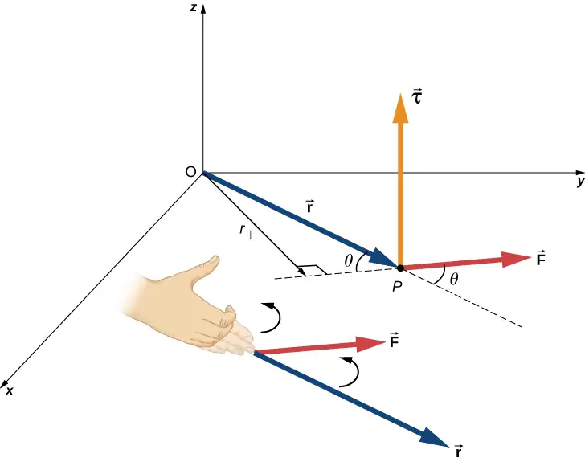
From the definition of the cross product, the torque \(\mathbf{\vec{\tau}}\) is perpendicular to the plane containing \(\mathbf{\vec{r}}\:\text{and}\:\mathbf{\vec{F}}\) and has magnitude
where \(\theta\) is the angle between the vectors \(\mathbf{\vec{r}}\) and \(\mathbf{\vec{F}}\). The SI unit of torque is newtons times meters, usually written as \(\text{N}\cdot\text{m}\). The quantity \(r_{\perp}=r\sin\:\theta\) is the perpendicular distance from O to the line determined by the vector \(\mathbf{\vec{F}}\) and is called the lever arm. Note that the greater the lever arm, the greater the magnitude of the torque. In terms of the lever arm, the magnitude of the torque is
equation callout
The cross product \(\mathbf{\vec{r}}\:\times\:\mathbf{\vec{F}}\) also tells us the sign of the torque. In Figure 10.32, the cross product \(\mathbf{\vec{r}}\:\times\:\mathbf{\vec{F}}\) is along the positive z-axis, which by convention is a positive torque. If \(\mathbf{\vec{r}}\:\times\:\mathbf{\vec{F}}\) is along the negative z-axis, this produces a negative torque.
If we consider a disk that is free to rotate about an axis through the center, as shown in Figure 10.33, we can see how the angle between the radius \(\mathbf{\vec{r}}\) and the force \(\mathbf{\vec{F}}\) affects the magnitude of the torque. If the angle is zero, the torque is zero; if the angle is \(90{}^{\circ}\), the torque is maximum. The torque in Figure 10.33 is positive because the direction of the torque by the right-hand rule is out of the page along the positive z-axis. The disk rotates counterclockwise due to the torque, in the same direction as a positive angular acceleration.
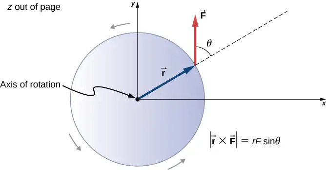
Any number of torques can be calculated about a given axis. The individual torques add to produce a net torque about the axis. When the appropriate sign (positive or negative) is assigned to the magnitudes of individual torques about a specified axis, the net torque about the axis is the sum of the individual torques:
equation callout
Calculating Net Torque for Rigid Bodies on a Fixed Axis¶
In the following examples, we calculate the torque both abstractly and as applied to a rigid body.
We first introduce a problem-solving strategy.
Problem-Solving Strategy: Finding Net Torque
- Choose a coordinate system with the pivot point or axis of rotation as the origin of the selected coordinate system.
- Determine the angle between the lever arm \(\mathbf{\vec{r}}\) and the force vector.
- Take the cross product of \(\mathbf{\vec{r}}\:\text{and}\:\mathbf{\vec{F}}\) to determine if the torque is positive or negative about the pivot point or axis.
- Evaluate the magnitude of the torque using \(r_{\perp}F\).
- Assign the appropriate sign, positive or negative, to the magnitude.
- Sum the torques to find the net torque.
Example 10.14 Calculating Torque
Four forces are shown in Figure 10.34 at particular locations and orientations with respect to a given xy-coordinate system. Find the torque due to each force about the origin, then use your results to find the net torque about the origin.
![Figure shows four forces producing torques that plotted at the XY coordinate system. Both X and Y axes plot distance in meters. Vector for the force that has a magnitude of 40 N starts at (4,0) point, is parallel to the Y axis, and is directed to the positive direction. Vector for the force that has a magnitude of 20 N starts at (0,-3) point, is parallel to the X axis, and is directed to the negative direction. Another vector for the force that has a magnitude of 20 N starts at (0,1) point, and is directed to the left top part of the graph forming a 60 degree angle with the X axis. Vector for the force that has a magnitude of 30 N starts at (-5,0) point, and is directed to the left bottom part of the graph forming a 53 degree angle with the X axis.](img/cnx-uphysics-10-06-forces.webp)
Strategy
This problem requires calculating torque. All known quantities––forces with directions and lever arms––are given in the figure. The goal is to find each individual torque and the net torque by summing the individual torques. Be careful to assign the correct sign to each torque by using the cross product of \(\mathbf{\vec{r}}\) and the force vector \(\mathbf{\vec{F}}\).
Solution
Use \(|\mathbf{\vec{\tau}}|=r_{\perp}F=|rF\sin\:\theta|\) to find the magnitude and \(\mathbf{\vec{\tau}}=\mathbf{\vec{r}}\:\times\:\mathbf{\vec{F}}\) to determine the sign of the torque.
The magnitude of the torque from force 40 N in the first quadrant is given by \((4)(40)\sin\:90{}^{\circ}=160\:\text{N}\cdot\text{m}\).
The cross product of \(\mathbf{\vec{r}}\) and \(\mathbf{\vec{F}}\) is out of the page, positive.
The magnitude of the torque from force 20 N in the third quadrant is given by\((3)(20)\sin\:90{}^{\circ}=-60\:\text{N}\cdot\text{m}\).
The cross product of \(\mathbf{\vec{r}}\) and \(\mathbf{\vec{F}}\) is into the page, so it is negative: \(-60\:\text{N}\cdot\text{m}\).
The magnitude of the torque from force 30 N in the third quadrant is given by \((5)(30)\sin\:53{}^{\circ}=120\:\text{N}\cdot\text{m}\).
The cross product of \(\mathbf{\vec{r}}\) and \(\mathbf{\vec{F}}\) is out of the page, positive.
The magnitude of the torque from force 20 N in the second quadrant is given by \((1)(20)\sin\:30{}^{\circ}=10\:\text{N}\cdot\text{m}\).
The cross product of \(\mathbf{\vec{r}}\) and \(\mathbf{\vec{F}}\) is out of the page.
The net magnitude of the torque is therefore \(\tau_{\text{net}}=\displaystyle \sum_{i}|{\mathbf{\tau}}_{i}|=160-60+120+10=230\:\text{N}\cdot\text{m}.\)
Significance
Note that each force that acts in the counterclockwise direction has a positive torque, whereas each force that acts in the clockwise direction has a negative torque. The torque is greater when the distance, force, or perpendicular components are greater.
Example 10.15 Calculating Torque on a rigid body
Figure 10.35 shows several forces acting at different locations and angles on a flywheel. We have \(|{\mathbf{\vec{F}}}_{1}|=20\:\text{N},\) \(|{\mathbf{\vec{F}}}_{2}|=30\:\text{N}\), \(|{\mathbf{\vec{F}}}_{3}|=30\:\text{N}\), and \(r=0.5\:\text{m}\). Find the net torque on the flywheel about an axis through the center.
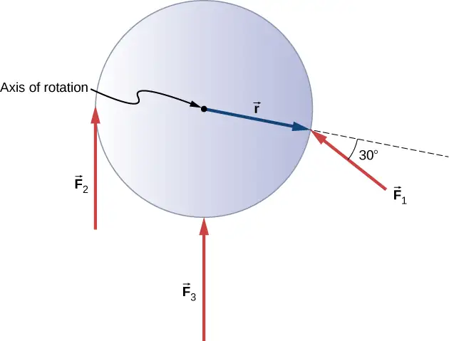
Strategy
We calculate each torque individually, using the cross product, and determine the sign of the torque. Then we sum the torques to find the net torque.
Solution
We start with \({\mathbf{\vec{F}}}_{1}\). If we look at Figure 10.35, we see that \({\mathbf{\vec{F}}}_{1}\) makes an angle of \(90{}^{\circ}+60{}^{\circ}\) with the radius vector \(\mathbf{\vec{r}}\). Taking the cross product, we see that it is out of the page and so is positive. We also see this from calculating its magnitude:
Next we look at \({\mathbf{\vec{F}}}_{2}\). The angle between \({\mathbf{\vec{F}}}_{2}\) and \(\mathbf{\vec{r}}\) is \(90{}^{\circ}\) and the cross product is into the page so the torque is negative. Its value is
When we evaluate the torque due to \({\mathbf{\vec{F}}}_{3}\), we see that the angle it makes with \(\mathbf{\vec{r}}\) is zero so \(\mathbf{\vec{r}}\:\times\:{\mathbf{\vec{F}}}_{3}=0.\) Therefore, \({\mathbf{\vec{F}}}_{3}\) does not produce any torque on the flywheel.
We evaluate the sum of the torques:
Significance
The axis of rotation is at the center of mass of the flywheel. Since the flywheel is on a fixed axis, it is not free to translate. If it were on a frictionless surface and not fixed in place, \({\mathbf{\vec{F}}}_{3}\) would cause the flywheel to translate, as well as \({\mathbf{\vec{F}}}_{1}\). Its motion would be a combination of translation and rotation.
Check Your Understanding
A large ocean-going ship runs aground near the coastline, similar to the fate of the Costa Concordia, and lies at an angle as shown below. Salvage crews must apply a torque to right the ship in order to float the vessel for transport. A force of \(5.0\:\times\:{10}^{5}\:\text{N}\) acting at point A must be applied to right the ship. What is the torque about the point of contact of the ship with the ground (Figure 10.36)?
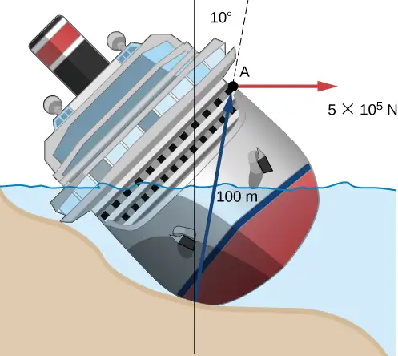
Answer
The angle between the lever arm and the force vector is \(80{}^{\circ};\) therefore, \(r_{\perp}=100\text{m(sin80}{}^{\circ})=98.5\:\text{m}\).
The cross product \(\mathbf{\vec{\tau}}=\mathbf{\vec{r}}\:\times\:\mathbf{\vec{F}}\) gives a negative or clockwise torque.
The torque is then \(\tau=-r_{\perp}F=-98.5\:\text{m}(5.0\:\times\:{10}^{5}\text{N})=-4.9\:\times\:{10}^{7}\text{N}\cdot\text{m}\).
10.7 Newton’s Second Law for Rotation¶
Learning Objectives
By the end of this section, you will be able to:
- Calculate the torques on rotating systems about a fixed axis to find the angular acceleration
- Explain how changes in the moment of inertia of a rotating system affect angular acceleration with a fixed applied torque
In this section, we put together all the pieces learned so far in this chapter to analyze the dynamics of rotating rigid bodies. We have analyzed motion with kinematics and rotational kinetic energy but have not yet connected these ideas with force and/or torque. In this section, we introduce the rotational equivalent to Newton’s second law of motion and apply it to rigid bodies with fixed-axis rotation.
Newton’s Second Law for Rotation¶
We have thus far found many counterparts to the translational terms used throughout this text, most recently, torque, the rotational analog to force. This raises the question: Is there an analogous equation to Newton’s second law, \(\Sigma\mathbf{\vec{F}}=m\mathbf{\vec{a}},\) which involves torque and rotational motion? To investigate this, we start with Newton’s second law for a single particle rotating around an axis and executing circular motion. Let’s exert a force \(\mathbf{\vec{F}}\) on a point mass m that is at a distance r from a pivot point (Figure 10.37). The particle is constrained to move in a circular path with fixed radius and the force is tangent to the circle. We apply Newton’s second law to determine the magnitude of the acceleration \(a=F\text{/}m\) in the direction of \(\mathbf{\vec{F}}\). Recall that the magnitude of the tangential acceleration is proportional to the magnitude of the angular acceleration by \(a=r\alpha\). Substituting this expression into Newton’s second law, we obtain
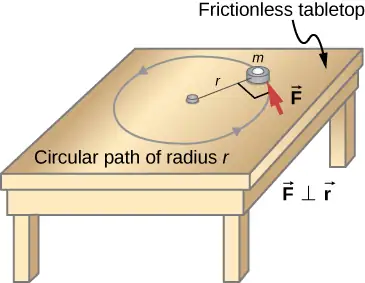
Multiply both sides of this equation by r,
Note that the left side of this equation is the torque about the axis of rotation, where r is the lever arm and F is the force, perpendicular to r. Recall that the moment of inertia for a point particle is\(I=mr^{2}\). The torque applied perpendicularly to the point mass in Figure 10.37 is therefore
The torque on the particle is equal to the moment of inertia about the rotation axis times the angular acceleration. We can generalize this equation to a rigid body rotating about a fixed axis.
Newton’s Second Law for Rotation
If more than one torque acts on a rigid body about a fixed axis, then the sum of the torques equals the moment of inertia times the angular acceleration:
The term \(I\alpha\) is a scalar quantity and can be positive or negative (counterclockwise or clockwise) depending upon the sign of the net torque. Remember the convention that counterclockwise angular acceleration is positive. Thus, if a rigid body is rotating clockwise and experiences a positive torque (counterclockwise), the angular acceleration is positive.
Equation 10.25 is Newton’s second law for rotation and tells us how to relate torque, moment of inertia, and rotational kinematics. This is called the equation for rotational dynamics. With this equation, we can solve a whole class of problems involving force and rotation. It makes sense that the relationship for how much force it takes to rotate a body would include the moment of inertia, since that is the quantity that tells us how easy or hard it is to change the rotational motion of an object.
Deriving Newton’s Second Law for Rotation in Vector Form¶
As before, when we found the angular acceleration, we may also find the torque vector. The second law \(\Sigma\mathbf{\vec{F}}=m\mathbf{\vec{a}}\) tells us the relationship between net force and how to change the translational motion of an object. We have a vector rotational equivalent of this equation, which can be found by using Equation 10.7 and Figure 10.8. Equation 10.7 relates the angular acceleration to the position and tangential acceleration vectors:
We form the cross product of this equation with \(\mathbf{\vec{r}}\) and use a cross product identity (note that \(\mathbf{\vec{r}}\cdot\mathbf{\vec{\alpha}}=0\)):
We now form the cross product of Newton’s second law with the position vector \(\mathbf{\vec{r}},\)
Identifying the first term on the left as the sum of the torques, and \(mr^{2}\) as the moment of inertia, we arrive at Newton’s second law of rotation in vector form:
This equation is exactly Equation 10.25 but with the torque and angular acceleration as vectors. An important point is that the torque vector is in the same direction as the angular acceleration.
Applying the Rotational Dynamics Equation¶
Before we apply the rotational dynamics equation to some everyday situations, let’s review a general problem-solving strategy for use with this category of problems.
Problem-Solving Strategy: Rotational Dynamics
- Examine the situation to determine that torque and mass are involved in the rotation. Draw a careful sketch of the situation.
- Determine the system of interest.
- Draw a free-body diagram. That is, draw and label all external forces acting on the system of interest.
- Identify the pivot point. If the object is in equilibrium, it must be in equilibrium for all possible pivot points––chose the one that simplifies your work the most.
- Apply \(\displaystyle \sum_{i}\tau_{i}=I\alpha\), the rotational equivalent of Newton’s second law, to solve the problem. Care must be taken to use the correct moment of inertia and to consider the torque about the point of rotation.
- As always, check the solution to see if it is reasonable.
Example 10.16 Calculating the Effect of Mass Distribution on a Merry-Go-Round
Consider the father pushing a playground merry-go-round in Figure 10.38. He exerts a force of 250 N at the edge of the 50.0-kg merry-go-round, which has a 1.50-m radius. Calculate the angular acceleration produced (a) when no one is on the merry-go-round and (b) when an 18.0-kg child sits 1.25 m away from the center. Consider the merry-go-round itself to be a uniform disk with negligible friction.
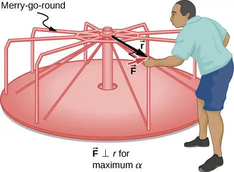
Strategy
The net torque is given directly by the expression \(\displaystyle \sum_{i}\tau_{i}=I\alpha\), To solve for \(\alpha\), we must first calculate the net torque \(\tau\) (which is the same in both cases) and moment of inertia I (which is greater in the second case).
Solution
a. The moment of inertia of a solid disk about this axis is given in Figure 10.20 to be
We have \(M=50.0\:\text{kg}\) and \(R=1.50\:\text{m}\), so
To find the net torque, we note that the applied force is perpendicular to the radius and friction is negligible, so that
Now, after we substitute the known values, we find the angular acceleration to be
b. We expect the angular acceleration for the system to be less in this part because the moment of inertia is greater when the child is on the merry-go-round. To find the total moment of inertia I, we first find the child’s moment of inertia \(I_{\text{c}}\) by approximating the child as a point mass at a distance of 1.25 m from the axis. Then
The total moment of inertia is the sum of the moments of inertia of the merry-go-round and the child (about the same axis):
Substituting known values into the equation for α gives
Significance
The angular acceleration is less when the child is on the merry-go-round than when the merry-go-round is empty, as expected. The angular accelerations found are quite large, partly due to the fact that friction was considered to be negligible. If, for example, the father kept pushing perpendicularly for 2.00 s, he would give the merry-go-round an angular velocity of 13.3 rad/s when it is empty but only 8.89 rad/s when the child is on it. In terms of revolutions per second, these angular velocities are 2.12 rev/s and 1.41 rev/s, respectively. The father would end up running at about 50 km/h in the first case.
Check Your Understanding
The fan blades on a jet engine have a moment of inertia \(30.0{\:\text{kg-m}}^{2}\). In 10 s, they rotate counterclockwise from rest up to a rotation rate of 20 rev/s. (a) What torque must be applied to the blades to achieve this angular acceleration? (b) What is the torque required to bring the fan blades rotating at 20 rev/s to a rest in 20 s?
Answer
a. The angular acceleration is \(\alpha=\frac{20.0(2\pi)\text{rad}\text{/}\text{s}-0}{10.0\:\text{s}}=12.56\:\text{rad}\text{/}\text{s}^{2}\). Solving for the torque, we have \(\displaystyle \sum_{i}\tau_{i}=I\alpha=(30.0\:\text{kg}\cdot\text{m}^{2})(12.56\:\text{rad}\text{/}\text{s}^{2})=376.80\:\text{N}\cdot\text{m}\); b. The angular acceleration is \(\alpha=\frac{0-20.0(2\pi)\text{rad}\text{/}\text{s}}{20.0\:\text{s}}=-6.28\:\text{rad}\text{/}\text{s}^{2}\). Solving for the torque, we have \(\displaystyle \sum_{i}\tau_{i}=I\alpha=(30.0{\:\text{kg-m}}^{2})(-6.28\:\text{rad}\text{/}\text{s}^{2})=-188.50\:\text{N}\cdot\text{m}\)
10.8 Work and Power for Rotational Motion¶
Learning Objectives
By the end of this section, you will be able to:
- Use the work-energy theorem to analyze rotation to find the work done on a system when it is rotated about a fixed axis for a finite angular displacement
- Solve for the angular velocity of a rotating rigid body using the work-energy theorem
- Find the power delivered to a rotating rigid body given the applied torque and angular velocity
- Summarize the rotational variables and equations and relate them to their translational counterparts
Thus far in the chapter, we have extensively addressed kinematics and dynamics for rotating rigid bodies around a fixed axis. In this final section, we define work and power within the context of rotation about a fixed axis, which has applications to both physics and engineering. The discussion of work and power makes our treatment of rotational motion almost complete, with the exception of rolling motion and angular momentum, which are discussed in Angular Momentum. We begin this section with a treatment of the work-energy theorem for rotation.
Work for Rotational Motion¶
Now that we have determined how to calculate kinetic energy for rotating rigid bodies, we can proceed with a discussion of the work done on a rigid body rotating about a fixed axis. Figure 10.39 shows a rigid body that has rotated through an angle \(d\theta\) from A to B while under the influence of a force \(\mathbf{\vec{F}}\). The external force \(\mathbf{\vec{F}}\) is applied to point P, whose position is \(\mathbf{\vec{r}}\), and the rigid body is constrained to rotate about a fixed axis that is perpendicular to the page and passes through O. The rotational axis is fixed, so the vector \(\mathbf{\vec{r}}\) moves in a circle of radius r, and the vector \(d\mathbf{\vec{s}}\) is perpendicular to \(\mathbf{\vec{r}}.\)
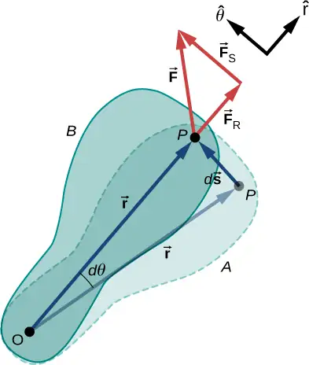
From Equation 10.2, we have
Thus,
Note that \(d\mathbf{\vec{r}}\) is zero because \(\mathbf{\vec{r}}\) is fixed on the rigid body from the origin O to point P. Using the definition of work, we obtain
where we used the identity \(\mathbf{\vec{a}}\cdot(\mathbf{\vec{b}}\:\times\:\mathbf{\vec{c}})=\mathbf{\vec{b}}\cdot(\mathbf{\vec{c}}\:\times\:\mathbf{\vec{a}})\). Noting that \((\mathbf{\vec{r}}\:\times\:\displaystyle \sum\vec{F})=\displaystyle \sum\mathbf{\vec{\tau}}\), we arrive at the expression for the rotational work done on a rigid body:
The total work done on a rigid body is the sum of the torques integrated over the angle through which the body rotates. The incremental work is
equation callout
where we have taken the dot product in Equation 10.27, leaving only torques along the axis of rotation. In a rigid body, all particles rotate through the same angle; thus the work of every external force is equal to the torque times the common incremental angle \(d\theta\). The quantity \(\left( \displaystyle \sum_{i}\tau_{i} \right)\) is the net torque on the body due to external forces.
Similarly, we found the kinetic energy of a rigid body rotating around a fixed axis by summing the kinetic energy of each particle that makes up the rigid body. Since the work-energy theorem \(W_{i}=\Delta K_{i}\) is valid for each particle, it is valid for the sum of the particles and the entire body.
Work-Energy Theorem for Rotation
The work-energy theorem for a rigid body rotating around a fixed axis is
where
and the rotational work done by a net force rotating a body from point A to point B is
We give a strategy for using this equation when analyzing rotational motion.
Problem-Solving Strategy: Work-Energy Theorem for Rotational Motion
- Identify the forces on the body and draw a free-body diagram. Calculate the torque for each force.
- Calculate the work done during the body’s rotation by every torque.
- Apply the work-energy theorem by equating the net work done on the body to the change in rotational kinetic energy.
Let’s look at two examples and use the work-energy theorem to analyze rotational motion.
Example 10.17 Rotational Work and Energy
A \(12.0\:\text{N}\cdot\text{m}\) torque is applied to a flywheel that rotates about a fixed axis and has a moment of inertia of \(30.0\:\text{kg}\cdot\text{m}^{2}\). If the flywheel is initially at rest, what is its angular velocity after it has turned through eight revolutions?
Strategy
We apply the work-energy theorem. We know from the problem description what the torque is and the angular displacement of the flywheel. Then we can solve for the final angular velocity.
Solution
The flywheel turns through eight revolutions, which is \(16\pi\) radians. The work done by the torque, which is constant and therefore can come outside the integral in Equation 10.30, is
We apply the work-energy theorem:
With \(\tau=12.0\:\text{N}\cdot\text{m},\theta_{B}-\theta_{A}=16.0\pi\:\text{rad},\:I=30.0\:\text{kg}\cdot\text{m}^{2},\:\text{and}\:\omega_{A}=0\), we have
Therefore,
This is the angular velocity of the flywheel after eight revolutions.
Significance
The work-energy theorem provides an efficient way to analyze rotational motion, connecting torque with rotational kinetic energy.
Example 10.18 Rotational Work: A Pulley
A string wrapped around the pulley in Figure 10.40 is pulled with a constant downward force \(\mathbf{\vec{F}}\) of magnitude 50 N. The radius R and moment of inertia I of the pulley are 0.10 m and \(2.5\:\times\:{10}^{-3}\text{kg-m}^{2}\), respectively. If the string does not slip, what is the angular velocity of the pulley after 1.0 m of string has unwound? Assume the pulley starts from rest.
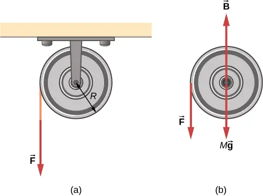
Strategy
Looking at the free-body diagram, we see that neither \(\mathbf{\vec{B}}\), the force on the bearings of the pulley, nor\(M\mathbf{\vec{g}}\), the weight of the pulley, exerts a torque around the rotational axis, and therefore does no work on the pulley. As the pulley rotates through an angle \(\theta,\) \(\mathbf{\vec{F}}\) acts through a distance d such that \(d=R\theta.\)
Solution
Since the torque due to \(\mathbf{\vec{F}}\) has magnitude \(\tau=RF\), we have
If the force on the string acts through a distance of 1.0 m, we have, from the work-energy theorem,
Solving for \(\omega\), we obtain
Power for Rotational Motion¶
Power always comes up in the discussion of applications in engineering and physics. Power for rotational motion is equally as important as power in linear motion and can be derived in a similar way as in linear motion when the force is a constant. The linear power when the force is a constant is \(P=\mathbf{\vec{F}}\cdot\mathbf{\vec{v}}\). If the net torque is constant over the angular displacement, Equation 10.25 simplifies and the net torque can be taken out of the integral. In the following discussion, we assume the net torque is constant. We can apply the definition of power derived in Power to rotational motion. From Work and Kinetic Energy, the instantaneous power (or just power) is defined as the rate of doing work,
If we have a constant net torque, Equation 10.25 becomes \(W=\tau\theta\) and the power is
or
equation callout
Example 10.19 Torque on a Boat Propeller
A boat engine operating at \(9.0\:\times\:{10}^{4}\:\text{W}\) is running at 300 rev/min. What is the torque on the propeller shaft?
Strategy
We are given the rotation rate in rev/min and the power consumption, so we can easily calculate the torque.
Solution
Significance
It is important to note the radian is a dimensionless unit because its definition is the ratio of two lengths. It therefore does not appear in the solution.
Check Your Understanding
A constant torque of \(500\:\text{kN}\cdot\text{m}\) is applied to a wind turbine to keep it rotating at 6 rad/s. What is the power required to keep the turbine rotating?
Answer
3 MW
Rotational and Translational Relationships Summarized¶
The rotational quantities and their linear analog are summarized in three tables. Table 10.5 summarizes the rotational variables for circular motion about a fixed axis with their linear analogs and the connecting equation, except for the centripetal acceleration, which stands by itself. Table 10.6 summarizes the rotational and translational kinematic equations. Table 10.7 summarizes the rotational dynamics equations with their linear analogs.
Table 10.5 Rotational and Translational Variables: Summary
| Rotational | Translational | Relationship |
|---|---|---|
| \(\theta\) | \(x\) | \(\theta=\frac{s}{r}\) |
| \(\omega\) | \(v_{t}\) | \(\omega=\frac{v_{t}}{r}\) |
| \(\alpha\) | \(a_{\text{t}}\) | \(\alpha=\frac{a_{\text{t}}}{r}\) |
| \(a_{\text{c}}\) | \(a_{\text{c}}=\frac{v_{\text{t}}^{2}}{r}\) |
Table 10.6 Rotational and Translational Kinematic Equations: Summary
| Rotational | Translational |
|---|---|
| \(\theta_{\text{f}}=\theta_{0}+\bar{\omega}t\) | \(x=x_{0}+\bar{v}t\) |
| \(\omega_{\text{f}}=\omega_{0}+\alpha t\) | \(v_{\text{f}}=v_{0}+at\) |
| \(\theta_{\text{f}}=\theta_{0}+\omega_{0}t+\frac{1}{2}\alpha t^{2}\) | \(x_{\text{f}}=x_{0}+v_{0}t+\frac{1}{2}at^{2}\) |
| \(\omega_{\text{f}}^{2}=\omega^{2}{}_{0}+2\alpha(\Delta\theta)\) | \(v_{\text{f}}^{2}=v^{2}{}_{0}+2a(\Delta x)\) |
Table 10.7 Rotational and Translational Equations: Dynamics
| Rotational | Translational |
|---|---|
| \(I=\displaystyle \sum_{i}m_{i}r_{i}^{2}\) | m |
| \(K=\frac{1}{2}I\omega^{2}\) | \(K=\frac{1}{2}mv^{2}\) |
| \(\displaystyle \sum_{i}\tau_{i}=I\alpha\) | \(\displaystyle \sum_{i}{\mathbf{\vec{F}}}_{i}=m\mathbf{\vec{a}}\) |
| \(W_{AB}=\displaystyle \int_{\theta_{A}}^{\theta_{B}}\left( \displaystyle \sum_{i}\tau_{i} \right)d\theta\) | \(W=\displaystyle \int\mathbf{\vec{F}}\cdot d\mathbf{\vec{s}}\) |
| \(P=\tau\omega\) | \(P=\mathbf{\vec{F}}\cdot\mathbf{\vec{v}}\) |
Chapter Review¶
Key Terms¶
- angular acceleration
- time rate of change of angular velocity
- angular position
- angle a body has rotated through in a fixed coordinate system
- angular velocity
- time rate of change of angular position
- instantaneous angular acceleration
- derivative of angular velocity with respect to time
- instantaneous angular velocity
- derivative of angular position with respect to time
- kinematics of rotational motion
- describes the relationships among rotation angle, angular velocity, angular acceleration, and time
- lever arm
- perpendicular distance from the line that the force vector lies on to a given axis
- linear mass density
- the mass per unit length \(\lambda\) of a one dimensional object
- moment of inertia
- rotational mass of rigid bodies that relates to how easy or hard it will be to change the angular velocity of the rotating rigid body
- Newton’s second law for rotation
- sum of the torques on a rotating system equals its moment of inertia times its angular acceleration
- parallel axis
- axis of rotation that is parallel to an axis about which the moment of inertia of an object is known
- parallel-axis theorem
- if the moment of inertia is known for a given axis, it can be found for any axis parallel to it
- rotational dynamics
- analysis of rotational motion using the net torque and moment of inertia to find the angular acceleration
- rotational kinetic energy
- kinetic energy due to the rotation of an object; this is part of its total kinetic energy
- rotational work
- work done on a rigid body due to the sum of the torques integrated over the angle through with the body rotates
- surface mass density
- mass per unit area \(\sigma\) of a two dimensional object
- torque
- cross product of a force and a lever arm to a given axis
- total linear acceleration
- vector sum of the centripetal acceleration vector and the tangential acceleration vector
Key Equations¶
| Angular position | \(\theta=\frac{s}{r}\) |
| Angular velocity | \(\omega=\lim_{\Delta t\rightarrow 0}\frac{\Delta\theta}{\Delta t}=\frac{d\theta}{dt}\) |
| Tangential speed | \(v_{\text{t}}=r\omega\) |
| Angular acceleration | \(\alpha=\lim_{\Delta t\rightarrow 0}\frac{\Delta\omega}{\Delta t}=\frac{d\omega}{dt}=\frac{d^{2}\theta}{dt^{2}}\) |
| Tangential acceleration | \(a_{\text{t}}=r\alpha\) |
| Average angular velocity | \(\bar{\omega}=\frac{\omega_{0}+\omega_{\text{f}}}{2}\) |
| Angular displacement | \(\theta_{\text{f}}=\theta_{0}+\bar{\omega}t\) |
| Angular velocity from constant angular acceleration | \(\omega_{\text{f}}=\omega_{0}+\alpha t\) |
| Angular velocity from displacement and constant angular acceleration |
\(\theta_{\text{f}}=\theta_{0}+\omega_{0}t+\frac{1}{2}\alpha t^{2}\) |
| Change in angular velocity | \(\omega_{\text{f}}^{2}=\omega_{0}^{2}+2\alpha(\Delta\theta)\) |
| Total acceleration | \(\mathbf{\vec{a}}={\mathbf{\vec{a}}}_{\text{c}}+{\mathbf{\vec{a}}}_{\text{t}}\) |
| Rotational kinetic energy | \(K=\frac{1}{2}\left( \displaystyle \sum_{j}m_{j}r_{j}^{2} \right)\omega^{2}\) |
| Moment of inertia | \(I=\displaystyle \sum_{j}m_{j}r_{j}^{2}\) |
| Rotational kinetic energy in terms of the moment of inertia of a rigid body |
\(K=\frac{1}{2}I\omega^{2}\) |
| Moment of inertia of a continuous object | \(I=\displaystyle \int r^{2}dm\) |
| Parallel-axis theorem | \(I_{\text{parallel-axis}}=I_{\text{center of mass}}+md^{2}\) |
| Moment of inertia of a compound object | \(I_{\text{total}}=\displaystyle \sum_{i}I_{i}\) |
| Torque vector | \(\mathbf{\vec{\tau}}=\mathbf{\vec{r}}\:\times\:\mathbf{\vec{F}}\) |
| Magnitude of torque | \(|\mathbf{\vec{\tau}}|=r_{\perp}F\) |
| Total torque | \({\vec{\tau}}_{\text{net}}=\displaystyle \sum_{i}|{\vec{\tau}}_{i}|\) |
| Newton’s second law for rotation | \(\displaystyle \sum_{i}\tau_{i}=I\alpha\) |
| Incremental work done by a torque | \(dW=\left( \displaystyle \sum_{i}\tau_{i} \right)d\theta\) |
| Work-energy theorem | \(W_{AB}=K_{B}-K_{A}\) |
| Rotational work done by net force | \(W_{AB}=\displaystyle \int_{\theta_{A}}^{\theta_{B}}\left( \displaystyle \sum_{i}\tau_{i} \right)d\theta\) |
| Rotational power | \(P=\tau\omega\) |
Summary¶
10.1 Rotational Variables¶
- The angular position \(\theta\) of a rotating body is the angle the body has rotated through in a fixed coordinate system, which serves as a frame of reference.
- The angular velocity of a rotating body about a fixed axis is defined as \(\omega(\text{rad}\text{/}\text{s})\), the rotational rate of the body in radians per second. The instantaneous angular velocity of a rotating body \(\omega=\lim_{\Delta t\rightarrow 0}\frac{\Delta\theta}{\Delta t}=\frac{d\theta}{dt}\) is the derivative with respect to time of the angular position \(\theta\), found by taking the limit \(\Delta t\rightarrow 0\) in the average angular velocity \(\bar{\omega}=\frac{\Delta\theta}{\Delta t}\). The angular velocity relates \(v_{\text{t}}\) to the tangential speed of a point on the rotating body through the relation \(v_{\text{t}}=r\omega\), where r is the radius to the point and \(v_{\text{t}}\) is the tangential speed at the given point.
- The angular velocity \(\mathbf{\vec{\omega}}\) is found using the right-hand rule. If the fingers curl in the direction of rotation about a fixed axis, the thumb points in the direction of \(\mathbf{\vec{\omega}}\) (see Figure 10.5).
- If the system’s angular velocity is not constant, then the system has an angular acceleration. The average angular acceleration over a given time interval is the change in angular velocity over this time interval, \(\bar{\alpha}=\frac{\Delta\omega}{\Delta t}\). The instantaneous angular acceleration is the time derivative of angular velocity, \(\alpha=\lim_{\Delta t\rightarrow 0}\frac{\Delta\omega}{\Delta t}=\frac{d\omega}{dt}\). The angular acceleration \(\mathbf{\vec{\alpha}}\) is found by locating the angular velocity. If a rotation rate of a rotating body is decreasing, the angular acceleration is in the opposite direction to \(\mathbf{\vec{\omega}}\). If the rotation rate is increasing, the angular acceleration is in the same direction as \(\mathbf{\vec{\omega}}\).
- The tangential acceleration of a point at a radius from the axis of rotation is the angular acceleration times the radius to the point.
10.2 Rotation with Constant Angular Acceleration¶
-
The kinematics of rotational motion describes the relationships among rotation angle (angular position), angular velocity, angular acceleration, and time.
-
For a constant angular acceleration, the angular velocity varies linearly. Therefore, the average angular velocity is 1/2 the initial plus final angular velocity over a given time period:
\[ \bar{\omega}=\frac{\omega_{0}+\omega_{\text{f}}}{2}. \] -
We used a graphical analysis to find solutions to fixed-axis rotation with constant angular acceleration. From the relation \(\omega=\frac{d\theta}{dt}\), we found that the area under an angular velocity-vs.-time curve gives the angular displacement, \(\theta_{\text{f}}-\theta_{0}=\Delta\theta=\displaystyle \int_{t_{0}}^{t}\omega(t)dt\). The results of the graphical analysis were verified using the kinematic equations for constant angular acceleration. Similarly, since \(\alpha=\frac{d\omega}{dt}\), the area under an angular acceleration-vs.-time graph gives the change in angular velocity: \(\omega_{f}-\omega_{0}=\Delta\omega=\displaystyle \int_{t_{0}}^{t}\alpha(t)dt\).
10.3 Relating Angular and Translational Quantities¶
- The linear kinematic equations have their rotational counterparts such that there is a mapping \(x\rightarrow\theta,\;v\rightarrow\omega,\;a\rightarrow\alpha\).
- A system undergoing uniform circular motion has a constant angular velocity, but points at a distance r from the rotation axis have a linear centripetal acceleration.
- A system undergoing nonuniform circular motion has an angular acceleration and therefore has both a linear centripetal and linear tangential acceleration at a point a distance r from the axis of rotation.
- The total linear acceleration is the vector sum of the centripetal acceleration vector and the tangential acceleration vector. Since the centripetal and tangential acceleration vectors are perpendicular to each other for circular motion, the magnitude of the total linear acceleration is \(|\mathbf{\vec{a}}|=\sqrt{a_{\text{c}}^{2}+a_{\text{t}}^{2}}\).
10.4 Moment of Inertia and Rotational Kinetic Energy¶
- The rotational kinetic energy is the kinetic energy of rotation of a rotating rigid body or system of particles, and is given by \(K=\frac{1}{2}I\omega^{2}\), where I is the moment of inertia, or “rotational mass” of the rigid body or system of particles.
- The moment of inertia for a system of point particles rotating about a fixed axis is \(I=\displaystyle \sum_{j}m_{j}r_{j}^{2}\), where \(m_{j}\) is the mass of the point particle and \(r_{j}\) is the distance of the point particle to the rotation axis. Because of the \(r^{2}\) term, the moment of inertia increases as the square of the distance to the fixed rotational axis. The moment of inertia is the rotational counterpart to the mass in linear motion.
- In systems that are both rotating and translating, conservation of mechanical energy can be used if there are no nonconservative forces at work. The total mechanical energy is then conserved and is the sum of the rotational and translational kinetic energies, and the gravitational potential energy.
10.5 Calculating Moments of Inertia¶
- Moments of inertia can be found by summing or integrating over every ‘piece of mass’ that makes up an object, multiplied by the square of the distance of each ‘piece of mass’ to the axis. In integral form the moment of inertia is \(I=\displaystyle \int r^{2}dm\).
- Moment of inertia is larger when an object’s mass is farther from the axis of rotation.
- It is possible to find the moment of inertia of an object about a new axis of rotation once it is known for a parallel axis. This is called the parallel axis theorem given by \(I_{\text{parallel-axis}}=I_{\text{center of mass}}+md^{2}\), where d is the distance from the initial axis to the parallel axis.
- Moment of inertia for a compound object is simply the sum of the moments of inertia for each individual object that makes up the compound object.
10.6 Torque¶
- The magnitude of a torque about a fixed axis is calculated by finding the lever arm to the point where the force is applied and using the relation \(|\mathbf{\vec{\tau}}|=r_{\perp}F\), where \(r_{\perp}\) is the perpendicular distance from the axis to the line upon which the force vector lies.
- The sign of the torque is found using the right hand rule. If the page is the plane containing \(\mathbf{\vec{r}}\) and \(\mathbf{\vec{F}}\), then \(\mathbf{\vec{r}}\:\times\:\mathbf{\vec{F}}\) is out of the page for positive torques and into the page for negative torques.
- The net torque can be found from summing the individual torques about a given axis.
10.7 Newton’s Second Law for Rotation¶
- Newton’s second law for rotation, \(\displaystyle \sum_{i}\tau_{i}=I\alpha\), says that the sum of the torques on a rotating system about a fixed axis equals the product of the moment of inertia and the angular acceleration. This is the rotational analog to Newton’s second law of linear motion.
- In the vector form of Newton’s second law for rotation, the torque vector \(\mathbf{\vec{\tau}}\) is in the same direction as the angular acceleration \(\mathbf{\vec{\alpha}}\). If the angular acceleration of a rotating system is positive, the torque on the system is also positive, and if the angular acceleration is negative, the torque is negative.
10.8 Work and Power for Rotational Motion¶
- The incremental work dW in rotating a rigid body about a fixed axis is the sum of the torques about the axis times the incremental angle \(d\theta\).
- The total work done to rotate a rigid body through an angle \(\theta\) about a fixed axis is the sum of the torques integrated over the angular displacement. If the torque is a constant as a function of \(\theta\), then \(W_{AB}=\tau(\theta_{B}-\theta_{A})\).
- The work-energy theorem relates the rotational work done to the change in rotational kinetic energy: \(W_{AB}=K_{B}-K_{A}\) where \(K=\frac{1}{2}I\omega^{2}.\)
- The power delivered to a system that is rotating about a fixed axis is the torque times the angular velocity, \(P=\tau\omega\).
Conceptual Questions¶
10.1 Rotational Variables¶
1. A clock is mounted on the wall. As you look at it, what is the direction of the angular velocity vector of the second hand?
Answer
The second hand rotates clockwise, so by the right-hand rule, the angular velocity vector is into the wall.
2. What is the value of the angular acceleration of the second hand of the clock on the wall?
3. A baseball bat is swung. Do all points on the bat have the same angular velocity? The same tangential speed?
Answer
They have the same angular velocity. Points further out on the bat have greater tangential speeds.
4. The blades of a blender on a counter are rotating clockwise as you look into it from the top. If the blender is put to a greater speed what direction is the angular acceleration of the blades?
10.2 Rotation with Constant Angular Acceleration¶
5. If a rigid body has a constant angular acceleration, what is the functional form of the angular velocity in terms of the time variable?
Answer
straight line, linear in time variable
6. If a rigid body has a constant angular acceleration, what is the functional form of the angular position?
7. If the angular acceleration of a rigid body is zero, what is the functional form of the angular velocity?
Answer
constant
8. A massless tether with a masses tied to both ends rotates about a fixed axis through the center. Can the total acceleration of the tether/mass combination be zero if the angular velocity is constant?
10.3 Relating Angular and Translational Quantities¶
9. Explain why centripetal acceleration changes the direction of velocity in circular motion but not its magnitude.
Answer
The centripetal acceleration vector is perpendicular to the velocity vector.
10. In circular motion, a tangential acceleration can change the magnitude of the velocity but not its direction. Explain your answer.
11. Suppose a piece of food is on the edge of a rotating microwave oven plate. Does it experience nonzero tangential acceleration, centripetal acceleration, or both when: (a) the plate starts to spin faster? (b) The plate rotates at constant angular velocity? (c) The plate slows to a halt?
Answer
a. both; b. nonzero centripetal acceleration; c. both
10.4 Moment of Inertia and Rotational Kinetic Energy¶
12. What if another planet the same size as Earth were put into orbit around the Sun along with Earth. Would the moment of inertia of the system increase, decrease, or stay the same?
13. A solid sphere is rotating about an axis through its center at a constant rotation rate. Another hollow sphere of the same mass and radius is rotating about its axis through the center at the same rotation rate. Which sphere has a greater rotational kinetic energy?
Answer
The hollow sphere, since the mass is distributed further away from the rotation axis.
10.5 Calculating Moments of Inertia¶
14. If a child walks toward the center of a merry-go-round, does the moment of inertia increase or decrease?
15. A discus thrower rotates with a discus in his hand before letting it go. (a) How does his moment of inertia change after releasing the discus? (b) What would be a good approximation to use in calculating the moment of inertia of the discus thrower and discus?
Answer
a. It decreases. b. The arms could be approximated with rods and the discus with a disk. The torso is near the axis of rotation so it doesn’t contribute much to the moment of inertia.
16. Does increasing the number of blades on a propeller increase or decrease its moment of inertia, and why?
17. The moment of inertia of a long rod spun around an axis through one end perpendicular to its length is \(mL^{2}\text{/}3\). Why is this moment of inertia greater than it would be if you spun a point mass m at the location of the center of mass of the rod (at L/2) (that would be \(mL^{2}\text{/}4\))?
Answer
Because the moment of inertia varies as the square of the distance to the axis of rotation. The mass of the rod located at distances greater than L/2 would provide the larger contribution to make its moment of inertia greater than the point mass at L/2.
18. Why is the moment of inertia of a hoop that has a mass M and a radius R greater than the moment of inertia of a disk that has the same mass and radius?
10.6 Torque¶
19. What three factors affect the torque created by a force relative to a specific pivot point?
Answer
magnitude of the force, length of the lever arm, and angle of the lever arm and force vector
20. Give an example in which a small force exerts a large torque. Give another example in which a large force exerts a small torque.
21. When reducing the mass of a racing bike, the greatest benefit is realized from reducing the mass of the tires and wheel rims. Why does this allow a racer to achieve greater accelerations than would an identical reduction in the mass of the bicycle’s frame?
Answer
The moment of inertia of the wheels is reduced, so a smaller torque is needed to accelerate them.
22. Can a single force produce a zero torque?
23. Can a set of forces have a net torque that is zero and a net force that is not zero?
Answer
yes
24. Can a set of forces have a net force that is zero and a net torque that is not zero?
25. In the expression \(\mathbf{\vec{r}}\:\times\:\mathbf{\vec{F}}\) can \(|\mathbf{\vec{r}}|\) ever be less than the lever arm? Can it be equal to the lever arm?
Answer
\(|\mathbf{\vec{r}}|\) can be equal to the lever arm but never less than the lever arm
10.7 Newton’s Second Law for Rotation¶
26. If you were to stop a spinning wheel with a constant force, where on the wheel would you apply the force to produce the maximum negative acceleration?
27. A rod is pivoted about one end. Two forces \(\mathbf{\vec{F}}\text{and}\:-\mathbf{\vec{F}}\) are applied to it. Under what circumstances will the rod not rotate?
Answer
If the forces are along the axis of rotation, or if they have the same lever arm and are applied at a point on the rod.
Problems¶
10.1 Rotational Variables¶
28. Calculate the angular velocity of Earth.
29. A track star runs a 400-m race on a 400-m circular track in 45 s. What is his angular velocity assuming a constant speed?
Answer
\(\omega=\frac{2\pi\:\text{rad}}{45.0\:\text{s}}=0.14\:\text{rad/s}\)
30. A wheel rotates at a constant rate of \(2.0\:\times\:{10}^{3}\:\text{rev}\text{/}\min\). (a) What is its angular velocity in radians per second? (b) Through what angle does it turn in 10 s? Express the solution in radians and degrees.
31. A particle moves 3.0 m along a circle of radius 1.5 m. (a) Through what angle does it rotate? (b) If the particle makes this trip in 1.0 s at a constant speed, what is its angular velocity? (c) What is its acceleration?
Answer
a. \(\theta=\frac{s}{r}=\frac{3.0\:\text{m}}{1.5\:\text{m}}=2.0\:\text{rad}\); b. \(\omega=\frac{2.0\:\text{rad}}{1.0\:\text{s}}=2.0\:\text{rad/s}\); c. \(\frac{v^{2}}{r}=\frac{{(3.0\:\text{m/s})}^{2}}{1.5\:\text{m}}=6.0\:\text{m}\text{/}\text{s}^{2}.\)
32. A compact disc rotates at 500 rev/min. If the diameter of the disc is 120 mm, (a) what is the tangential speed of a point at the edge of the disc? (b) At a point halfway to the center of the disc?
33. Unreasonable results. The propeller of an aircraft is spinning at 10 rev/s when the pilot shuts off the engine. The propeller reduces its angular velocity at a constant \(2.0\:\text{rad}\text{/}\text{s}^{2}\) for a time period of 40 s. What is the rotation rate of the propeller in 40 s? Is this a reasonable situation?
Answer
The propeller takes only \(\Delta t=\frac{\Delta\omega}{\alpha}=\frac{0\:\text{rad/s}-10.0(2\pi)\:\text{rad/s}}{-2.0\:\text{rad}\text{/}\text{s}^{2}}=31.4\:\text{s}\) to come to rest, when the propeller is at 0 rad/s, it would start rotating in the opposite direction. This would be impossible due to the magnitude of forces involved in getting the propeller to stop and start rotating in the opposite direction.
34. A gyroscope slows from an initial rate of 32.0 rad/s at a rate of \(0.700{\:\text{rad/s}}^{2}\). How long does it take to come to rest?
35. On takeoff, the propellers on a UAV (unmanned aerial vehicle) increase their angular velocity for 3.0 s from rest at a rate of \(\omega=(25.0t)\:\text{rad}\text{/}\text{s}\) where t is measured in seconds. (a) What is the instantaneous angular velocity of the propellers at \(t=2.0\:\text{s}\)? (b) What is the angular acceleration?
Answer
a. \(\omega=25.0(2.0\:\text{s})=50.0\:\text{rad/s}\); b. \(\alpha=\frac{d\omega}{dt}=25.0\:\text{rad/s}^{2}\)
36. The angular position of a rod varies as \(20.0t^{2}\) radians from time \(t=0\). The rod has two beads on it as shown in the following figure, one at 10 cm from the rotation axis and the other at 20 cm from the rotation axis. (a) What is the instantaneous angular velocity of the rod at \(t=5\:\text{s}?\) (b) What is the angular acceleration of the rod? (c) What are the tangential speeds of the beads at \(t=5\:\text{s}?\) (d) What are the tangential accelerations of the beads at \(t=5\:\text{s}?\) (e) What are the centripetal accelerations of the beads at \(t=5\:\text{s}?\)
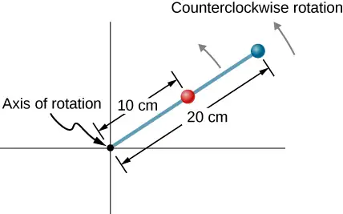
10.2 Rotation with Constant Angular Acceleration¶
37. A wheel has a constant angular acceleration of \(5.0\:\text{rad}\text{/}\text{s}^{2}\). Starting from rest, it turns through 300 rad. (a) What is its final angular velocity? (b) How much time elapses while it turns through the 300 radians?
Answer
a. \(\omega=55\:\text{rad}\text{/}\text{s}\);
b. \(t=11\:\text{s}\)
38. During a 6.0-s time interval, a flywheel with a constant angular acceleration turns through 500 radians that acquire an angular velocity of 100 rad/s. (a) What is the angular velocity at the beginning of the 6.0 s? (b) What is the angular acceleration of the flywheel?
39. The angular velocity of a rotating rigid body increases from 500 to 1500 rev/min in 120 s. (a) What is the angular acceleration of the body? (b) Through what angle does it turn in this 120 s?
Answer
a. \(0.87\:\text{rad}\text{/}\text{s}^{2}\);
b. \(\theta=12,600\:\text{rad}\)
40. A flywheel slows from 600 to 400 rev/min while rotating through 40 revolutions. (a) What is the angular acceleration of the flywheel? (b) How much time elapses during the 40 revolutions?
41. A wheel 1.0 m in radius rotates with an angular acceleration of \(4.0\:\text{rad}\text{/}\text{s}^{2}\). (a) If the wheel’s initial angular velocity is 2.0 rad/s, what is its angular velocity after 10 s? (b) Through what angle does it rotate in the 10-s interval? (c) What are the tangential speed and acceleration of a point on the rim of the wheel at the end of the 10-s interval?
Answer
a. \(\omega=42.0\:\text{rad}\text{/}\text{s}\);
b. \(\theta=220\:\text{rad}\); c. \(\begin{array}{c} v_{t}=42\:\text{m}\text{/}\text{s} \\ a_{t}=4.0\:\text{m}\text{/}\text{s}^{2} \end{array}\)
42. A vertical wheel with a diameter of 50 cm starts from rest and rotates with a constant angular acceleration of \(5.0\:\text{rad}\text{/}\text{s}^{2}\) around a fixed axis through its center counterclockwise. (a) Where is the point that is initially at the bottom of the wheel at \(t=10\:\text{s?}\) (b) What is the point’s linear acceleration at this instant?
43. A circular disk of radius 10 cm has a constant angular acceleration of \(1.0\:\text{rad}\text{/}\text{s}^{2}\); at \(t=0\) its angular velocity is 2.0 rad/s. (a) Determine the disk’s angular velocity at \(t=5.0\:\text{s}\). (b) What is the angle it has rotated through during this time? (c) What is the tangential acceleration of a point on the disk at \(t=5.0\:\text{s}?\)
Answer
a. \(\omega=7.0\:\text{rad}\text{/}\text{s}\);
b. \(\theta=22.5\:\text{rad}\); c. \(a_{\text{t}}=0.10\:\text{m}\text{/}\text{s}^{2}\)
44. The angular velocity vs. time for a fan on a hovercraft is shown below. (a) What is the angle through which the fan blades rotate in the first 8 seconds? (b) Verify your result using the kinematic equations.
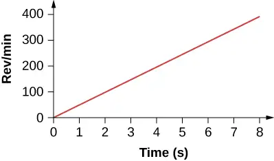
45. A rod of length 20 cm has two beads attached to its ends. The rod with beads starts rotating from rest. If the beads are to have a tangential speed of 20 m/s in 7 s, what is the angular acceleration of the rod to achieve this?
Answer
\(\alpha=28.6\:\text{rad}\text{/}\text{s}^{2}\).
10.3 Relating Angular and Translational Quantities¶
46. At its peak, a tornado is 60.0 m in diameter and carries 500 km/h winds. What is its angular velocity in revolutions per second?
47. A man stands on a merry-go-round that is rotating at 2.5 rad/s. If the coefficient of static friction between the man’s shoes and the merry-go-round is \(\mu_{\text{S}}=0.5\), how far from the axis of rotation can he stand without sliding?
Answer
\(r=0.78\:\text{m}\)
48. An ultracentrifuge accelerates from rest to 100,000 rpm in 2.00 min. (a) What is the average angular acceleration in \(\text{rad/s}^{2}\)? (b) What is the tangential acceleration of a point 9.50 cm from the axis of rotation? (c) What is the centripetal acceleration in \(\text{m/s}^{2}\) and multiples of g of this point at full rpm? (d) What is the total distance traveled during the acceleration by a point 9.5 cm from the axis of rotation of the ultracentrifuge?
49. A wind turbine is rotating counterclockwise at 0.5 rev/s and slows to a stop in 10 s. Its blades are 20 m in length. (a) What is the angular acceleration of the turbine? (b) What is the centripetal acceleration of the tip of the blades at \(t=0\:\text{s?}\) (c) What is the magnitude and direction of the total linear acceleration of the tip of the blade that lies along the positive x-axis at \(t=0\:\text{s?}\)
Answer
a. \(\alpha=-0.314\:\text{rad}\text{/}\text{s}^{2}\),
b. \(a_{\text{c}}=197.4\:\text{m}\text{/}\text{s}^{2}\); c. \(a=\sqrt{a_{\text{c}}^{2}+a_{\text{t}}^{2}}=\sqrt{{197.4}^{2}+{(-6.28)}^{2}}=197.5\:\text{m}\text{/}\text{s}^{2}\)
\(\theta=\tan^{-1}\frac{-6.28}{197.4}=-1.8{}^{\circ}\) in the counterclockwise direction from the centripetal acceleration vector
50. What is (a) the angular speed and (b) the linear speed of a point on Earth’s surface at latitude \(30{}^{\circ}\) N. Take the radius of the Earth to be 6309 km. (c) At what latitude would your linear speed be 10 m/s?
51. A child with mass 40 kg sits on the edge of a merry-go-round at a distance of 3.0 m from its axis of rotation. The merry-go-round accelerates from rest up to 0.4 rev/s in 10 s. If the coefficient of static friction between the child and the surface of the merry-go-round is 0.6, does the child fall off before 5 s?
Answer
\(ma=40.0\:\text{kg}(4.75\:\text{m}\text{/}\text{s}^{2})=190\:\text{N}\)
The maximum friction force is \(\mu_{\text{S}}N=0.6(40.0\:\text{kg})(9.8\:\text{m}\text{/}\text{s}^{2})=235.2\:\text{N}\) so the child does not fall off yet.
52. A bicycle wheel with radius 0.3 m rotates from rest to 3 rev/s in 5 s. What is the magnitude and direction of the total acceleration vector at the edge of the wheel at 1.0 s?
53. The angular velocity of a flywheel with radius 1.0 m varies according to \(\omega(t)=2.0t\). Plot \(a_{\text{c}}(t)\:\text{and}\:a_{\text{t}}(t)\) from \(t=\text{0 to 3.0 s}\) for \(r=1.0\:\text{m}\). Analyze these results to explain when \(a_{\text{c}}\gg a_{\text{t}}\) and when \(a_{\text{c}}\ll a_{\text{t}}\) for a point on the flywheel at a radius of 1.0 m.
Answer
\(\begin{array}{ccc} v_{\text{t}} & = & r\omega=1.0(2.0t)\:\text{m/s} \\ a_{\text{c}} & = & \frac{v_{t}^{2}}{r}=\frac{{(2.0t)}^{2}}{1.0\:\text{m}}=4.0t^{2}\text{m}\text{/}\text{s}^{2} \\ a_{\text{t}}(t) & = & r\alpha(t)=r\frac{d\omega}{dt}=1.0\:\text{m}(2.0)=2.0\:\text{m}\text{/}\text{s}^{2}. \end{array}\)
Plotting both accelerations gives
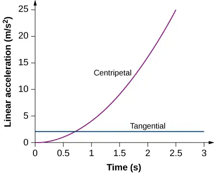
The tangential acceleration is constant, while the centripetal acceleration is time dependent, and increases with time to values much greater than the tangential acceleration after t = 1s. For times less than 0.7 s and approaching zero the centripetal acceleration is much less than the tangential acceleration.
10.4 Moment of Inertia and Rotational Kinetic Energy¶
54. A system of point particles is shown in the following figure. Each particle has mass 0.3 kg and they all lie in the same plane. (a) What is the moment of inertia of the system about the given axis? (b) If the system rotates at 5 rev/s, what is its rotational kinetic energy?
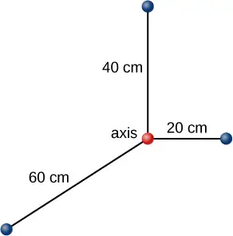
55. (a) Calculate the rotational kinetic energy of Earth on its axis. (b) What is the rotational kinetic energy of Earth in its orbit around the Sun?
Answer
a. \(K=2.56\:\times\:{10}^{29}\:\text{J;}\)
b. \(K=2.68\:\times\:{10}^{33}\:\text{J}\)
56. Calculate the rotational kinetic energy of a 12-kg motorcycle wheel if its angular velocity is 120 rad/s and its inner radius is 0.280 m and outer radius 0.330 m.
57. A baseball pitcher throws the ball in a motion where there is rotation of the forearm about the elbow joint as well as other movements. If the linear velocity of the ball relative to the elbow joint is 20.0 m/s at a distance of 0.480 m from the joint and the moment of inertia of the forearm is \(0.500{\:\text{kg-m}}^{2}\), what is the rotational kinetic energy of the forearm?
Answer
\(K=434.0\:\text{J}\)
58. A diver goes into a somersault during a dive by tucking her limbs. If her rotational kinetic energy is 100 J and her moment of inertia in the tuck is \(9.0\:\text{kg}\cdot\text{m}^{2}\), what is her rotational rate during the somersault?
59. An aircraft is coming in for a landing at 300 meters height when the propeller falls off. The aircraft is flying at 40.0 m/s horizontally. The propeller has a rotation rate of 20 rev/s, a moment of inertia of \(70.0{\:\text{kg-m}}^{2}\), and a mass of 200 kg. Neglect air resistance so the rotation rate does not change as the propeller falls. (a) With what translational velocity does the propeller hit the ground? (b) What is the rotation rate of the propeller at impact?
Answer
a. \(v_{\text{f}}=86.5\:\text{m}\text{/}\text{s}\);
b. The rotational rate of the propeller stays the same at 20 rev/s.
60. An aircraft is coming in for a landing at 300 meters height when the propeller falls off. When it comes off, the propeller has a rotation rate of 20 rev/s, a moment of inertia of \(70.0{\:\text{kg-m}}^{2}\), and a mass of 200 kg. If air resistance is present and reduces the propeller’s rotational kinetic energy at impact by 30%, what is the propeller’s rotation rate at impact?
61. A neutron star of mass \(2\:\times\:{10}^{30}\:\text{kg}\) and radius 10 km rotates with a period of 0.02 seconds. What is its rotational kinetic energy?
Answer
\(K=3.95\:\times\:{10}^{42}\:\text{J}\)
62. An electric sander consisting of a rotating disk of mass 0.7 kg and radius 10 cm rotates at 15 rev/s. When applied to a rough wooden wall the rotation rate decreases by 20%. (a) What is the final rotational kinetic energy of the rotating disk? (b) How much has its rotational kinetic energy decreased?
63. A system consists of a disk of mass 2.0 kg and radius 50 cm upon which is mounted an annular cylinder of mass 1.0 kg with inner radius 20 cm and outer radius 30 cm (see below). The system rotates about an axis through the center of the disk and annular cylinder at 10 rev/s. (a) What is the moment of inertia of the system? (b) What is its rotational kinetic energy?
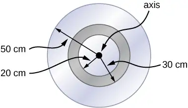
Answer
a. \(I=0.315\:\text{kg}\cdot\text{m}^{2}\);
b. \(K=621.8\:\text{J}\)
10.5 Calculating Moments of Inertia¶
64. While punting a football, a kicker rotates their leg about the hip joint. The moment of inertia of the leg is \(3.75{\:\text{kg-m}}^{2}\) and its rotational kinetic energy is 175 J. (a) What is the angular velocity of the leg? (b) What is the velocity of tip of the punter’s shoe if it is 1.05 m from the hip joint?
65. Using the parallel axis theorem, what is the moment of inertia of the rod of mass m about the axis shown below?
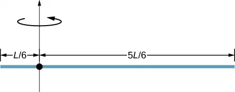
Answer
\(I=\frac{7}{36}mL^{2}\)
66. Find the moment of inertia of the rod in the previous problem by direct integration.
67. A uniform rod of mass 1.0 kg and length 2.0 m is free to rotate about one end (see the following figure). If the rod is released from rest at an angle of \(60{}^{\circ}\) with respect to the horizontal, what is the speed of the tip of the rod as it passes the horizontal position?
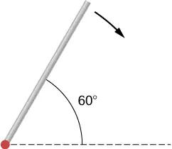
Answer
\(v=7.14\:\text{m}\text{/}\text{s}.\)
68. A pendulum consists of a rod of mass 2 kg and length 1 m with a solid sphere at one end with mass 0.3 kg and radius 20 cm (see the following figure). If the pendulum is released from rest at an angle of \(30{}^{\circ}\), what is the angular velocity at the lowest point?
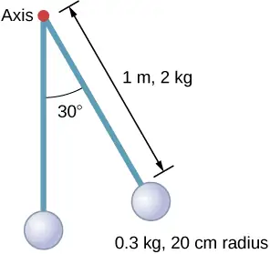
69. A solid sphere of radius 10 cm is allowed to rotate freely about an axis. The sphere is given a sharp blow so that its center of mass starts from the position shown in the following figure with speed 15 cm/s. What is the maximum angle that the diameter makes with the vertical?
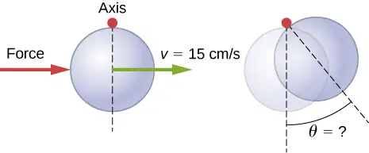
Answer
\(\theta=10.2{}^{\circ}\)
70. Calculate the moment of inertia by direct integration of a thin rod of mass M and length L about an axis through the rod at L/3, as shown below. Check your answer with the parallel-axis theorem.
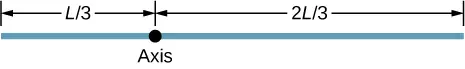
10.6 Torque¶
71. Two flywheels of negligible mass and different radii are bonded together and rotate about a common axis (see below). The smaller flywheel of radius 30 cm has a cord that has a pulling force of 50 N on it. What pulling force needs to be applied to the cord connecting the larger flywheel of radius 50 cm such that the combination does not rotate?
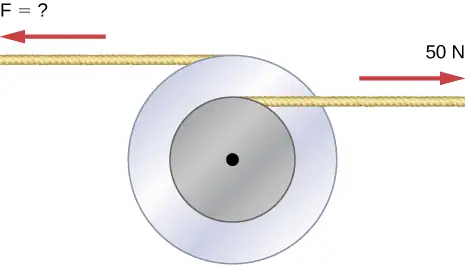
Answer
\(F=30\:\text{N}\)
72. The cylinder head bolts on a car are to be tightened with a torque of 62.0 N\(\cdot\text{m}\). If a mechanic uses a wrench of length 20 cm, what perpendicular force must he exert on the end of the wrench to tighten a bolt correctly?
73. (a) When opening a door, you push on it perpendicularly with a force of 55.0 N at a distance of 0.850 m from the hinges. What torque are you exerting relative to the hinges? (b) Does it matter if you push at the same height as the hinges? There is only one pair of hinges.
Answer
a. \(0.85\:\text{m}(55.0\:\text{N})=46.75\:\text{N}\cdot\text{m}\); b. It does not matter at what height you push.
74. When tightening a bolt, you push perpendicularly on a wrench with a force of 165 N at a distance of 0.140 m from the center of the bolt. How much torque are you exerting in newton-meters (relative to the center of the bolt)?
75. What hanging mass must be placed on the cord to keep the pulley from rotating (see the following figure)? The mass on the frictionless plane is 5.0 kg. The mass on the plane is connected to a cord that wraps around the pulley’s inner radius of 20 cm. The hanging mass is connected to a cord that wraps around the pulley’s outer radius of 30 cm.
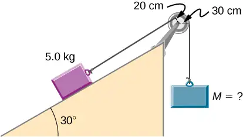
Answer
\(m_{2}=\frac{4.9\:\text{N}\cdot\text{m}}{9.8(0.3\:\text{m})}=1.67\:\text{kg}\)
76. A simple pendulum consists of a massless tether 50 cm in length connected to a pivot and a small mass of 1.0 kg attached at the other end. What is the torque about the pivot when the pendulum makes an angle of \(40{}^{\circ}\) with respect to the vertical?
77. Calculate the torque about the z-axis that is out of the page at the origin in the following figure, given that \(F_{1}=3\:\text{N},\;F_{2}=2\:\text{N},\;F_{3}=3\:\text{N},\;F_{4}=1.8\:\text{N}\).
![Figure shows the XY coordinate system. Force F1 is applied from the point that is located at the line that originates from the center of the coordinate system and is directed towards the top right corner. Point is 3 meters away from the origin and force F1 is directed towards the right bottom corner. Force F2 is applied from the point that is located at the Y axis, 2 meters above the center of the coordinate system. Force F2 forms 30 degree angle with the line parallel to the X axis and is directed towards the left bottom corner. Force F3 is applied from the center of coordinate system and is directed towards the left bottom corner. Force F4 is applied from the point that is located at the X axis, 2 meters to the right from the center of the coordinate system. Force F2 forms 20 degree angle with the line parallel to the Y axis and is directed towards the left bottom corner.](img/cnx-uphysics-10-06-prob12-img.webp)
Answer
\(\tau_{net}=-9.0\:\text{N}\cdot\text{m}+3.46\:\text{N}\cdot\text{m}+0-3.38\:\text{N}\cdot\text{m}=-8.92\:\text{N}\cdot\text{m}\)
78. A seesaw has length 10.0 m and uniform mass 10.0 kg and is resting at an angle of \(30{}^{\circ}\) with respect to the ground (see the following figure). The pivot is located at 6.0 m. What magnitude of force needs to be applied perpendicular to the seesaw at the raised end so as to allow the seesaw to barely start to rotate?
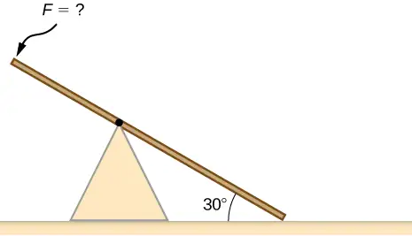
79. A pendulum consists of a rod of mass 1 kg and length 1 m connected to a pivot with a solid sphere attached at the other end with mass 0.5 kg and radius 30 cm. What is the torque about the pivot when the pendulum makes an angle of \(30{}^{\circ}\) with respect to the vertical?
Answer
\(\tau=5.66\:\text{N}\cdot\text{m}\)
80. A torque of \(5.00\:\times\:{10}^{3}\text{N}\cdot\text{m}\) is required to raise a drawbridge (see the following figure). What is the tension necessary to produce this torque? Would it be easier to raise the drawbridge if the angle \(\theta\) were larger or smaller?
81. A horizontal beam of length 3 m and mass 2.0 kg has a mass of 1.0 kg and width 0.2 m sitting at the end of the beam (see the following figure). What is the torque of the system about the support at the wall?
Answer
\(\displaystyle \sum\tau=57.82\:\text{N}\cdot\text{m}\)
82. What force must be applied to end of a rod along the x-axis of length 2.0 m in order to produce a torque on the rod about the origin of \(8.0\mathbf{\hat{k}}\:\text{N}\cdot\text{m}\) ?
83. What is the torque about the origin of the force \((5.0\mathbf{\hat{i}}-2.0\mathbf{\hat{j}}+1.0\mathbf{\hat{k}})\:\text{N}\) if it is applied at the point whose position is: \(\mathbf{\vec{r}}=(-2.0\mathbf{\hat{i}}+4.0\mathbf{\hat{j}})\:\text{m?}\)
Answer
\(\mathbf{\vec{r}}\:\times\:\mathbf{\vec{F}}=4.0\mathbf{\hat{i}}+2.0\mathbf{\hat{j}}-16.0\mathbf{\hat{k}}\text{N}\cdot\text{m}\)
10.7 Newton’s Second Law for Rotation¶
84. You have a grindstone (a disk) that is 90.0 kg, has a 0.340-m radius, and is turning at 90.0 rpm, and you press a steel axe against it with a radial force of 20.0 N. (a) Assuming the kinetic coefficient of friction between steel and stone is 0.20, calculate the angular acceleration of the grindstone. (b) How many turns will the stone make before coming to rest?
85. Suppose you exert a force of 180 N tangential to a 0.280-m-radius, 75.0-kg grindstone (a solid disk). (a)What torque is exerted? (b) What is the angular acceleration assuming negligible opposing friction? (c) What is the angular acceleration if there is an opposing frictional force of 20.0 N exerted 1.50 cm from the axis?
Answer
a. \(\tau=(0.280\:\text{m})(180.0\:\text{N})=50.4\:\text{N}\cdot\text{m}\); b. \(\alpha=17.14\:\text{rad}\text{/}\text{s}^{2}\);
c. \(\alpha=17.04\:\text{rad}\text{/}\text{s}^{2}\)
86. A flywheel (\(I=50{\:\text{kg-m}}^{2}\)) starting from rest acquires an angular velocity of 200.0 rad/s while subject to a constant torque from a motor for 5 s. (a) What is the angular acceleration of the flywheel? (b) What is the magnitude of the torque?
87. A constant torque is applied to a rigid body whose moment of inertia is \(4.0{\:\text{kg-m}}^{2}\) around the axis of rotation. If the wheel starts from rest and attains an angular velocity of 20.0 rad/s in 10.0 s, what is the applied torque?
Answer
\(\tau=8.0\:\text{N}\cdot\text{m}\)
88. A torque of 50.0 N-m is applied to a grinding wheel (\(I=20.0\:\text{kg-m}^{2}\)) for 20 s. (a) If it starts from rest, what is the angular velocity of the grinding wheel after the torque is removed? (b) Through what angle does the wheel move while the torque is applied?
89. A flywheel (\(I=100.0{\:\text{kg-m}}^{2}\)) rotating at 500.0 rev/min is brought to rest by friction in 2.0 min. What is the frictional torque on the flywheel?
Answer
\(\tau=-43.6\:\text{N}\cdot\text{m}\)
90. A uniform cylindrical grinding wheel of mass 50.0 kg and diameter 1.0 m is turned on by an electric motor. The friction in the bearings is negligible. (a) What torque must be applied to the wheel to bring it from rest to 120 rev/min in 20 revolutions? (b) A tool whose coefficient of kinetic friction with the wheel is 0.60 is pressed perpendicularly against the wheel with a force of 40.0 N. What torque must be supplied by the motor to keep the wheel rotating at a constant angular velocity?
91. Suppose when Earth was created, it was not rotating. However, after the application of a uniform torque for 6 days according to the current length of a day, it was rotating at 1 rev/day. (a) What was the angular acceleration during the 6 days? (b) What torque was applied to Earth during this period? (c) What force tangent to Earth at its equator would produce this torque?
Answer
a. \(\alpha=1.4\:\times\:{10}^{-10}\:\text{rad}\text{/}\text{s}^{2}\);
b. \(\tau=1.36\:\times\:{10}^{28}\text{N-m}\); c. \(F=2.1\:\times\:{10}^{21}\:\text{N}\)
92. A pulley of moment of inertia \(2.0\:\text{kg-m}^{2}\) is mounted on a wall as shown in the following figure. Light strings are wrapped around two circumferences of the pulley and weights are attached. What are (a) the angular acceleration of the pulley and (b) the linear acceleration of the weights? Assume the following data: \(r_{1}=50\:\text{cm},\;r_{2}=20\:\text{cm},\;m_{1}=1.0\:\text{kg},\;m_{2}=2.0\:\text{kg}\).
93. A block of mass 3 kg slides down an inclined plane at an angle of \(45{}^{\circ}\) with a massless tether attached to a pulley with mass 1 kg and radius 0.5 m at the top of the incline (see the following figure). The pulley can be approximated as a disk. The coefficient of kinetic friction on the plane is 0.4. What is the acceleration of the block?
Answer
\(a=3.6\:\text{m}\text{/}\text{s}^{2}\)
94. The cart shown below moves across the table top as the block falls. What is the acceleration of the cart? Neglect friction and assume the following data:\(m_{1}=2.0\:\text{kg},m_{2}=4.0\:\text{kg},I=0.4\:\text{kg-m}^{2},r=20\:\text{cm}\)
95. A uniform rod of mass and length is held vertically by two strings of negligible mass, as shown below. (a) Immediately after the string is cut, what is the linear acceleration of the free end of the stick? (b) Of the middle of the stick?
Answer
a. \(a=r\alpha=14.7\:\text{m}\text{/}\text{s}^{2}\); b. \(a=\frac{L}{2}\alpha=\frac{3}{4}g\)
96. A thin stick of mass 0.2 kg and length \(L=0.5\:\text{m}\) is attached to the rim of a metal disk of mass \(M=2.0\:\text{kg}\) and radius \(R=0.3\:\text{m}\). The stick is free to rotate around a horizontal axis through its other end (see the following figure). (a) If the combination is released with the stick horizontal, what is the speed of the center of the disk when the stick is vertical? (b) What is the acceleration of the center of the disk at the instant the stick is released? (c) At the instant the stick passes through the vertical?
10.8 Work and Power for Rotational Motion¶
97. A wind turbine rotates at 20 rev/min. If its power output is 2.0 MW, what is the torque produced on the turbine from the wind?
Answer
\(\tau=\frac{P}{\omega}=\frac{2.0\:\times\:{10}^{6}\text{W}}{2.1\:\text{rad}\text{/}\text{s}}=9.5\:\times\:{10}^{5}\text{N}\cdot\text{m}\)
98. A clay cylinder of radius 20 cm on a potter’s wheel spins at a constant rate of 10 rev/s. The potter applies a force of 10 N to the clay with his hands where the coefficient of friction is 0.1 between his hands and the clay. What is the power that the potter has to deliver to the wheel to keep it rotating at this constant rate?
99. A uniform cylindrical grindstone has a mass of 10 kg and a radius of 12 cm. (a) What is the rotational kinetic energy of the grindstone when it is rotating at \(1.5\:\times\:{10}^{3}\text{rev}\text{/}\min?\) (b) After the grindstone’s motor is turned off, a knife blade is pressed against the outer edge of the grindstone with a perpendicular force of 5.0 N. The coefficient of kinetic friction between the grindstone and the blade is 0.80. Use the work energy theorem to determine how many turns the grindstone makes before it stops.
Answer
a. \(K=888.50\:\text{J}\);
b. \(\Delta\theta=294.6\:\text{rev}\)
100. A uniform disk of mass 500 kg and radius 0.25 m is mounted on frictionless bearings so it can rotate freely around a vertical axis through its center (see the following figure). A cord is wrapped around the rim of the disk and pulled with a force of 10 N. (a) How much work has the force done at the instant the disk has completed three revolutions, starting from rest? (b) Determine the torque due to the force, then calculate the work done by this torque at the instant the disk has completed three revolutions? (c) What is the angular velocity at that instant? (d) What is the power output of the force at that instant?
101. A propeller is accelerated from rest to an angular velocity of 1000 rev/min over a period of 6.0 seconds by a constant torque of \(2.0\:\times\:{10}^{3}\text{N}\cdot\text{m}\). (a) What is the moment of inertia of the propeller? (b) What power is being provided to the propeller 3.0 s after it starts rotating?
Answer
a. \(I=114.6\:\text{kg}\cdot\text{m}^{2}\);
b. \(P=104,700\:\text{W}\)
102. A sphere of mass 1.0 kg and radius 0.5 m is attached to the end of a massless rod of length 3.0 m. The rod rotates about an axis that is at the opposite end of the sphere (see below). The system rotates horizontally about the axis at a constant 400 rev/min. After rotating at this angular speed in a vacuum, air resistance is introduced and provides a force \(0.15\:\text{N}\) on the sphere opposite to the direction of motion. What is the power provided by air resistance to the system 100.0 s after air resistance is introduced?
103. A uniform rod of length L and mass M is held vertically with one end resting on the floor as shown below. When the rod is released, it rotates around its lower end until it hits the floor. Assuming the lower end of the rod does not slip, what is the linear velocity of the upper end when it hits the floor?
Answer
\(v=L\omega=\sqrt{3Lg}\)
104. An athlete in a gym applies a constant force of 50 N to the pedals of a bicycle at a rate of the pedals moving 60 rev/min. The length of the pedal arms is 30 cm. What is the power delivered to the bicycle by the athlete?
105. A 2-kg block on a frictionless inclined plane at \(40{}^{\circ}\) has a cord attached to a pulley of mass 1 kg and radius 20 cm (see the following figure). The block slides a distance of 0.50 m. (a) What is the acceleration of the block down the plane? (b) What is the work done by the cord on the pulley?
Answer
a. \(a=5.0\:\text{m}\text{/}\text{s}^{2}\); b. \(W=1.25\:\text{N}\cdot\text{m}\)
106. Small bodies of mass \(m_{1}\:\text{and}\:m_{2}\) are attached to opposite ends of a thin rigid rod of length L and mass M. The rod is mounted so that it is free to rotate in a horizontal plane around a vertical axis (see below). What distance d from \(m_{1}\) should the rotational axis be so that a minimum amount of work is required to set the rod rotating at an angular velocity \(\omega?\)
Additional Problems¶
107. A cyclist is riding such that the wheels of the bicycle have a rotation rate of 3.0 rev/s. If the cyclist brakes such that the rotation rate of the wheels decrease at a rate of \(0.3\:\text{rev}\text{/}\text{s}^{2}\), how long does it take for the cyclist to come to a complete stop?
Answer
\(\Delta t=10.0\:\text{s}\)
108. Calculate the angular velocity of the orbital motion of Earth around the Sun.
109. A phonograph turntable rotating at 33 1/3 rev/min slows down and stops in 1.0 min. (a) What is the turntable’s angular acceleration, in radians/s2, assuming it is constant? (b) How many revolutions does the turntable make while stopping?
Answer
a. \(0.06\:\text{rad}\text{/}\text{s}^{2}\); b. \(\theta=16.7\:\text{revolutions}\)
110. With the aid of a string, a gyroscope is accelerated from rest to 32 rad/s in 0.40 s under a constant angular acceleration. (a) What is its angular acceleration in \(\text{rad/s}^{2}\)? (b) How many revolutions does it go through in the process?
111. Suppose a piece of dust has fallen on a CD. If the spin rate of the CD is 500 rpm, and the piece of dust is 4.3 cm from the center, what is the total distance traveled by the dust in 3 minutes? (Ignore accelerations due to getting the CD rotating.)
Answer
\(s=405.26\:\text{m}\)
112. A system of point particles is rotating about a fixed axis at 4 rev/s. The particles are fixed with respect to each other. The masses and distances to the axis of the point particles are \(m_{1}=0.1\:\text{kg},r_{1}=0.2\:\text{m}\), \(m_{2}=0.05\:\text{kg},r_{2}=0.4\:\text{m}\), \(m_{3}=0.5\:\text{kg},r_{3}=0.01\:\text{m}\). (a) What is the moment of inertia of the system? (b) What is the rotational kinetic energy of the system?
113. Calculate the moment of inertia of a skater given the following information. (a) The 60.0-kg skater is approximated as a cylinder that has a 0.110-m radius. (b) The skater with arms extended is approximated by a cylinder that is 52.5 kg, has a 0.110-m radius, and has two 0.900-m-long arms which are 3.75 kg each and extend straight out from the cylinder like rods rotated about their ends.
Answer
a. \(I=0.363\:\text{kg}\cdot\text{m}^{2}\);
b. \(I=2.34\:\text{kg}\cdot\text{m}^{2}\)
114. A stick of length 1.0 m and mass 6.0 kg is free to rotate about a horizontal axis through the center. Small bodies of masses 4.0 and 2.0 kg are attached to its two ends (see the following figure). The stick is released from the horizontal position. What is the angular velocity of the stick when it swings through the vertical?
115. A pendulum consists of a rod of length 2 m and mass 3 kg with a solid sphere of mass 1 kg and radius 0.3 m attached at one end. The axis of rotation is as shown below. What is the angular velocity of the pendulum at its lowest point if it is released from rest at an angle of \(30{}^{\circ}?\)
Answer
\(\omega=\sqrt{\frac{6.68\:\text{J}}{4.4\:\text{kgm}^{2}}}=1.23\:\text{rad}\text{/}\text{s}\)
116. Calculate the torque of the 40-N force around the axis through O and perpendicular to the plane of the page as shown below.
117. Two children push on opposite sides of a door during play. Both push horizontally and perpendicular to the door. One child pushes with a force of 17.5 N at a distance of 0.600 m from the hinges, and the second child pushes at a distance of 0.450 m. What force must the second child exert to keep the door from moving? Assume friction is negligible.
Answer
\(F=23.3\:\text{N}\)
118. The force of \(20\mathbf{\hat{j}}\text{N}\) is applied at \(\mathbf{\vec{r}}=(4.0\mathbf{\hat{i}}-2.0\mathbf{\hat{j}})\:\text{m}\). What is the torque of this force about the origin?
119. An automobile engine can produce 200 N\(\cdot\) m of torque. Calculate the angular acceleration produced if 95.0% of this torque is applied to the drive shaft, axle, and rear wheels of a car, given the following information. The car is suspended so that the wheels can turn freely. Each wheel acts like a 15.0-kg disk that has a 0.180-m radius. The walls of each tire act like a 2.00-kg annular ring that has inside radius of 0.180 m and outside radius of 0.320 m. The tread of each tire acts like a 10.0-kg hoop of radius 0.330 m. The 14.0-kg axle acts like a rod that has a 2.00-cm radius. The 30.0-kg drive shaft acts like a rod that has a 3.20-cm radius.
Answer
\(\alpha=\frac{190.0\:\text{N-m}}{2.94\:\text{kg-m}^{2}}=64.4\:{\text{rad}\text{/}\text{s}}^{2}\)
120. A grindstone with a mass of 50 kg and radius 0.8 m maintains a constant rotation rate of 4.0 rev/s by a motor while a knife is pressed against the edge with a force of 5.0 N. The coefficient of kinetic friction between the grindstone and the blade is 0.8. What is the power provided by the motor to keep the grindstone at the constant rotation rate?
Challenge Problems¶
121. The angular acceleration of a rotating rigid body is given by \(\alpha=(2.0-3.0t)\:\text{rad}\text{/}\text{s}^{2}\). If the body starts rotating from rest at \(t=0\), (a) what is the angular velocity? (b) Angular position? (c) What angle does it rotate through in 10 s? (d) Where does the vector perpendicular to the axis of rotation indicating \(0{}^{\circ}\) at \(t=0\) lie at \(t=10\:\text{s}\)?
Answer
a. \(\omega=2.0t-1.5t^{2}\); b. \(\theta=t^{2}-0.5t^{3}\); c. \(\theta=-400.0\:\text{rad}\); d. the vector is at \(-0.66(360{}^{\circ})=-237.6{}^{\circ}\)
122. Earth’s day has increased by 0.002 s in the last century. If this increase in Earth’s period is constant, how long will it take for Earth to come to rest?
123. A disk of mass m, radius R, and area A has a surface mass density \(\sigma=\frac{mr}{AR}\) (see the following figure). What is the moment of inertia of the disk about an axis through the center?
Answer
\(I=\frac{2}{5}mR^{2}\)
124. Zorch, an archenemy of Rotation Man, decides to slow Earth’s rotation to once per 28.0 h by exerting an opposing force at and parallel to the equator. Rotation Man is not immediately concerned, because he knows Zorch can only exert a force of \(4.00\:\times\:10^{7}\text{N}\) (a little greater than a Saturn V rocket’s thrust). How long must Zorch push with this force to accomplish his goal? (This period gives Rotation Man time to devote to other villains.)
125. A cord is wrapped around the rim of a solid cylinder of radius 0.25 m, and a constant force of 40 N is exerted on the cord shown, as shown in the following figure. The cylinder is mounted on frictionless bearings, and its moment of inertia is \(6.0\:\text{kg}\cdot\text{m}^{2}\). (a) Use the work energy theorem to calculate the angular velocity of the cylinder after 5.0 m of cord have been removed. (b) If the 40-N force is replaced by a 40-N weight, what is the angular velocity of the cylinder after 5.0 m of cord have unwound?
Answer
a. \(\omega=8.2\:\text{rad}\text{/}\text{s}\); b. \(\omega=8.0\:\text{rad}\text{/}\text{s}\)
Adapted from University Physics Volume 1 by OpenStax, licensed under CC BY 4.0. Access the original for free at openstax.org. Changes: converted to the web reading format of The Open Book Project.